55 saved questions rebuilt from local capture only. Missed: Q2, Q7, Q14, Q19, Q21, Q25, Q28, Q31, Q41, Q42, Q49.
Q1
hard QID 49057
Correct
The following label has which of the following radiation level restriction?
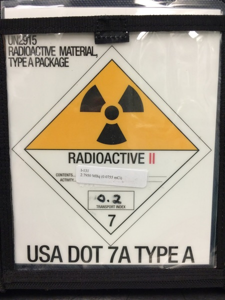
A</= 0.5mrem/hr at surface, no significant radiation at a meter(4%)
B</= 1mrem/hr at surface, </= 0.5mrem/hr at one meter(19%)
C</= 10mrem/hr at surface, </= 1mrem/hr at one meter(23%)
D</= 50mrem/hr at surface, </= 1mrem/hr at one meter(54%)
Your answerD
Correct answerD. </= 50mrem/hr at surface, </= 1mrem/hr at one meter
Explanation
</= 50mrem/hr at surface, </= 1mrem/hr at one meter
The white I label indicates almost no radiation (</= 0.5mrem/hr at surface). The yellow II label indicates low radiation levels (</= 50mrem/hr at surface, </= 1mrem/hr at 1 meter). The yellow III label indicates higher radiation levels (</= 200mrem/hr at surface, </= 10mrem/hr at one meter).
Q2
hard QID 20809
Incorrect
A 67-year-old male patient presents with new lower extremity weakness, numbness, and urinary incontinence. Which of the following is the most likely diagnosis?
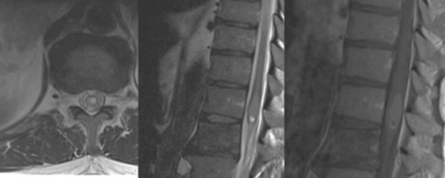
AHemangioblastoma(37%)
BMetastasis(44%)
CMeningioma(1%)
DSchwannoma(2%)
Your answerA
Correct answerB. Metastasis
Vital Concept
Multifocal findings should always bring to mind the potential of metastatic disease.
Explanation
Metastasis
A clinical finding of a new neurologic deficit should suggest a relatively rapidly progressive etiology. The finding of an intramedullary expansile lesion with internal T2 prolongation (green arrows) and enhancement (blue arrow) may be seen in many etiologies. However, an examination of the entire image will reveal the presence of diffuse marrow replacement in the L1 vertebral body (red arrows). Multifocal findings should always bring to mind the potential of metastatic disease (yellow arrow). This patient did have lung carcinoma, and the lesion in question was a metastatic deposit.
A differential, in this case, would be ependymoma, which frequently presents as an intramedullary cord lesion and may expand the cord with internal T2 prolongation. Often, an enhancing component is noted. A hallmark finding is the hemosiderin cap, a hypointense crescentic region at either the cranial or caudal margin. In this case, vertebral body infiltration would not be expected in the setting of an isolated spinal cord ependymoma.
Incorrect Answers:
A. Hemangioblastoma is frequently encountered as an expansile intramedullary cord lesion with internal T2 prolongation and focal enhancement. Additional findings may include flow voids.
C. Meningioma is an extramedullary lesion centered on the dura and presents as an extrinsic mass that may impress upon the cord. Cord expansion would not be expected.
D. Schwannoma is another extramedullary lesion, which commonly arises from the nerve roots, frequently presenting as a dumbbell-shaped enhancing mass within a neural foramen.
Vital Concept: Multifocal findings should always bring to mind the potential of metastatic disease.
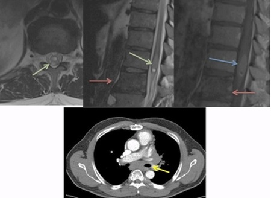
Q3
moderate QID 18093
Correct
Which of the following is the most likely diagnosis in this 61-year-old male patient given the imaging findings?
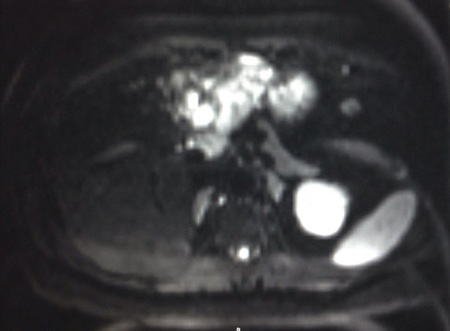
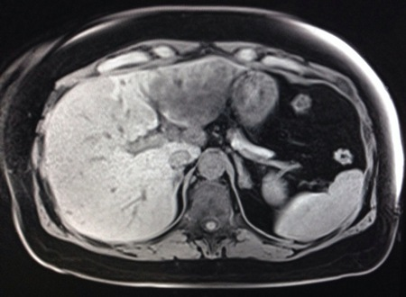
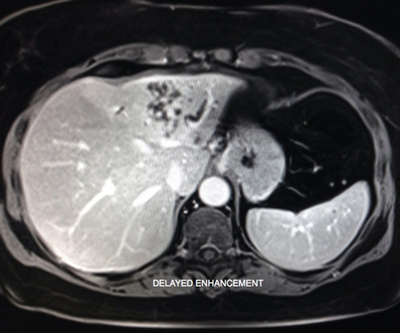
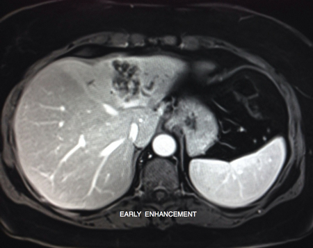
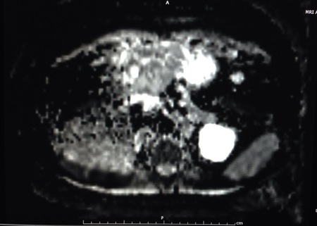
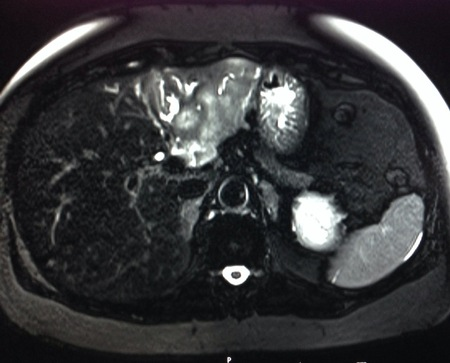
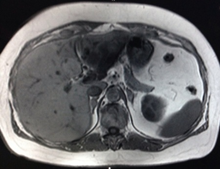
AHepatocellular carcinoma(3%)
BHepatic metastatic mass(1%)
CHemangioma(7%)
DCholangiocarcinoma(90%)
Your answerD
Correct answerD. Cholangiocarcinoma
Explanation
Cholangiocarcinoma
This case demonstrates the typical imaging features of a peripheral cholangiocarcinoma involving the left hepatic lobe. There is an ill-defined mass that is hypointense on T1, hyperintense on T2 with delayed contrast enhancement, capsular retraction (both secondary to fibrous tissue) and dilatation of the distal bile ducts. Some diffusion restriction is also seen.
Incorrect Answers:
A. Unlike cholangiocarcinoma, HCC will demonstrate early diffuse enhancement with early washout, delayed peripheral rim of enhancement (fibrous capsule), portal tumor thrombus (more common than cholangiocarcinoma), and no capsular retraction. Appearances can be very similar.
B. Hepatic metastatic masses tend to have higher internal T2 signal secondary to central necrosis. Other typical features of cholangiocarcinoma seen in this case are not common.
C. A giant hemangioma (>4cm) is a well demarcated T1 hypointense, T2 intensely hyperintense mass with progressive peripheral to central contrast enhancement (peripheral early nodular contrast enhancement is typical with delayed progressive enhancement).
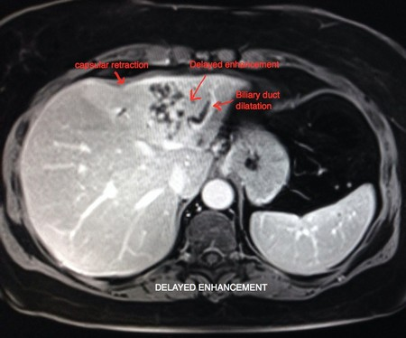
Q4
hard QID 39259
Correct
A 61-year-old female patient presents to the gynecologist with new onset vaginal bleeding. The patient is referred for a sonographic examination. Which of the following is the most likely diagnosis?
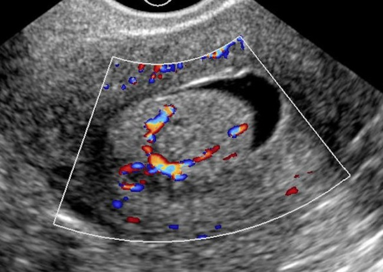
AEndometrial polyp(73%)
BHormone replacement therapy related changes(0%)
CEndometrial carcinoma(20%)
DSubmucosal fibroid(6%)
EEndometrial hyperplasia(0%)
Your answerA
Correct answerA. Endometrial polyp
Explanation
Endometrial polyp
The color Doppler sonographic image demonstrates a broad-based mass within the endometrial canal (yellow arrow) with a prominent feeding vessel that may be seen extending to the polyp (green arrow). Causes of postmenopausal bleeding include endometrial atrophy, endometrial polyps, submucosal fibroids, endometrial hyperplasia, endometrial carcinoma, and estrogen withdrawal. Although endometrial polyps may be visualized at transvaginal US as nonspecific endometrial thickening, they are frequently identified as focal masses within the endometrial canal. Furthermore, the presence of a feeding vessel has been reported to have excellent accuracy for the prediction of polyps.
Incorrect Answers:
B. Patients undergoing hormone replacement therapy can have a variable appearance and thickness of the endometrium. The acceptable range of endometrial thickness is less well established in this group, and cut-off values of 8-11 mm have been suggested.
C. Ultrasound signs of endometrial carcinoma include heterogeneity and irregular endometrial thickening.
D. Submucosal fibroids are commonly identified in the US as hypoechoic solid masses, but they may be heterogeneous or hyperechoic, depending on the degree of degeneration and calcification.
E. The US appearance of endometrial hyperplasia is variable. It can simulate that of normal thickening during the secretory phase, sessile polyps, submucosal fibroids, cancer, and adherent blood clots, yielding potentially false-positive results. Endometrial hyperplasia is considered whenever the endometrium appears to exceed 10 mm in thickness, especially in menopausal patients, although it can be reliably excluded in these patients only when the endometrium measures less than 6 mm.
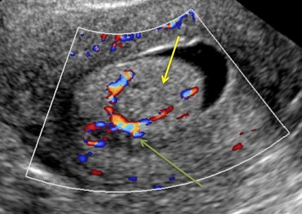
Q5
easy QID 21148
Correct
A 32-year-old postpartum patient presents with worsening right lower quadrant pain and fever. Which of the following is the diagnosis?
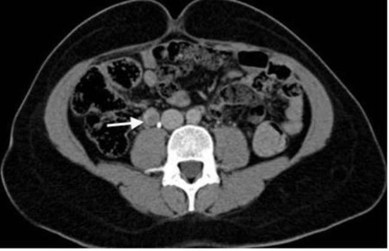
AAppendicitis(1%)
BEpiploic appendagitis(0%)
CUreteral calculus(1%)
DOvarian vein thrombophlebitis(98%)
EEndometritis(0%)
Your answerD
Correct answerD. Ovarian vein thrombophlebitis
Explanation
Ovarian vein thrombophlebitis
A prominent low-density filling defect is noted within an expanded right ovarian vein (blue arrow), suggesting ovarian vein thrombosis. In the setting of fever and pain, a diagnosis of ovarian vein thrombophlebitis should be suggested. This is a diagnosis seen most frequently in postpartum female patients and requires anticoagulation (and antibiotics, if fever is present).
Incorrect Answers:
A. Appendicitis is not suggested in this case. While appendicitis is a common cause of right lower quadrant pain, the appendix is not seen here. The imaging appearance of appendicitis includes a thickened, dilated, fluid-filled appendix with surrounding fat stranding. An appendicolith may be present but is not required for the diagnosis.
B. Epiploic appendagitis is a venous infarction of an epiploic appendage of the colon, seen on the antimesenteric side of the colon. Frequently there will be surrounding ill-defined hazy fat stranding with a central “dot” sign, representing the infarcted central vein. These are non-surgical cases and are treated with aspirin or other anti-inflammatory medications.
C. Ureteral calculi can present with acute right lower quadrant pain, and urinary stones are not uncommon in pregnant or postpartum patients. However, the abnormal structure in this case is adjacent to the contrast-filled ureter, suggesting another diagnosis.
E. Endometritis is an occasional postpartum complication and has a nonspecific imaging appearance. In the immediate postpartum setting, the endometrium is normally thickened and heterogeneously enhanced, and there may be associated gas locules. However, if on subsequent examinations there is increasing thickening or gas within the endometrium, endometritis could be suggested.
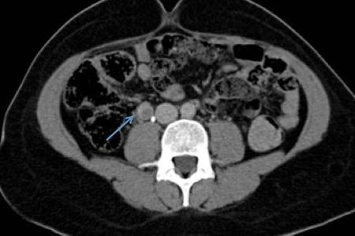
Q6
QID 56300
Correct
In the case of this 31-year-old male with left lower extremity pain, which of the following is the most likely diagnosis?
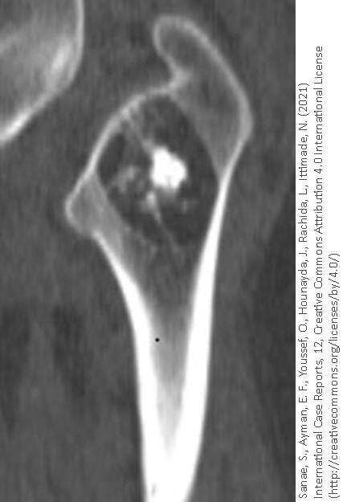
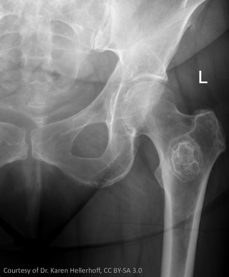
AMetastatic bone lesion(0%)
BOsteosarcoma(1%)
CIntraosseous lipoma(83%)
DGiant cell tumor(6%)
EFibrous dysplasia(10%)
Your answerC
Correct answerC. Intraosseous lipoma
Explanation
Intraosseous lipoma
Intraosseous lipoma is a benign tumor that is usually well-circumscribed with a narrow zone of transition and predominantly radiolucent radiographic appearance. They also demonstrate characteristic intralesional fat best demonstrated on CT (seen here) or MRI. Calcifications can also be seen centrally within these findings, as seen in this case. Cortical expansion can be seen, but cortical destruction is generally not seen (unless there is associated fracture). These lesions can be asymptomatic and incidentally discovered or can be a cause of chronic pain.
Incorrect Answers:
A. Metastatic bone lesion typically does not present as a large single expansile lucent lesion.
B. Osteosarcoma typically demonstrates malignant features such as cortical destruction, wide zone of transition, and aggressive periosteal reaction; this lesion demonstrates benign features like expansion without cortical disruption and a narrow zone of transition.
D. Giant cell tumor does not usually have a sclerotic margin. They usually abut the articular surface.
E. Fibrous dysplasia classically demonstrates a predominance of ground-glass attenuation on CT. The predominance of fat attenuation within this lesion on coronal CT makes intraosseous lipoma more likely of the two.
Q7
hard QID 49574
Incorrect
A 25-year-old female patient presents with hemiparesis after undergoing embolization of a right internal carotid artery terminus aneurysm. In which of the following arterial distributions is the infarct?
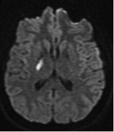
AMedial lenticulostriate artery(23%)
BLateral lenticulostriate artery(24%)
CAnterior choroidal artery(52%)
DMiddle cerebral artery(2%)
Your answerB
Correct answerC. Anterior choroidal artery
Vital Concept
Anterior choroidal artery infarcts involve posterior limb internal capsule and medial temporal involvement with characteristic serpentine shape.
Explanation
Anterior choroidal artery
There is an infarct in the posterior limb of the internal capsule, which is supplied by the anterior choroidal artery. This artery is a branch arising from the internal carotid artery terminus/C7 segment, immediately above the origin of the posterior communicating artery. Infarct in this arterial territory is common when treating aneurysms in the distal internal carotid artery.
Incorrect Answers:
A. B. D. As shown above, these are incorrect answer choices.
Vital Concept: Anterior choroidal artery infarcts involve posterior limb internal capsule and medial temporal involvement with characteristic serpentine shape.
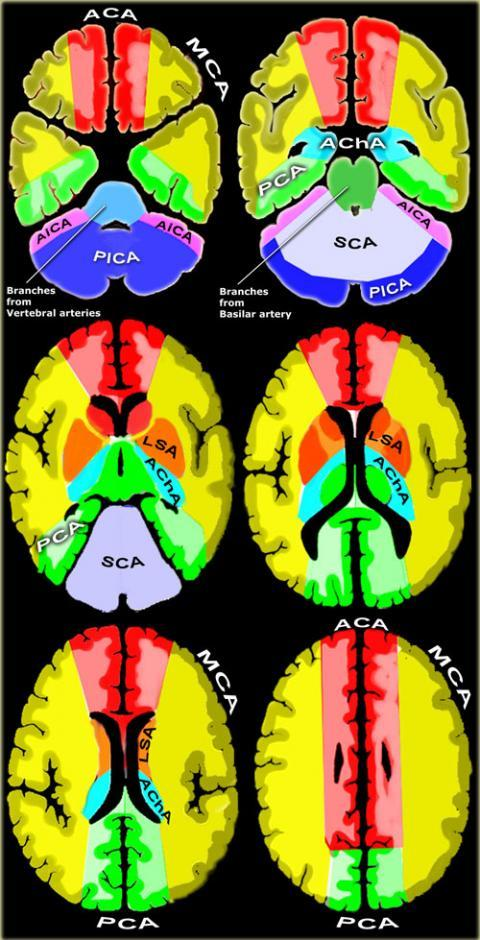
Q8
easy QID 2908
Correct
Multiple fluoroscopy setups are shown in the diagram. Which of the following will result in the lowest exposure rate to the patient?
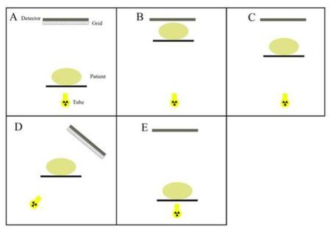
AA(1%)
BB(94%)
CC(2%)
DD(1%)
EE(3%)
Your answerB
Correct answerB. B
Explanation
B
It is crucial to understand the parameters that affect radiation dose to both the patient and the staff. The use of a grid will decrease the number of incident photons on the receptor and always result in higher radiation dose than the same configuration with no grid. A major point to consider here is the distance of the x-ray tube from the patient (SSD), as dose will decrease by the square of the distance. The patient should always be at the furthest possible position away from the tube to minimize skin dose. Another factor to consider is the distance from the patient to the image intensifier (OID). The decrease in photon flux at the image intensifier causes the ABC to increase the radiation dose. In summary, the ideal setup from a dose perspective is a large SSD and small OID, as shown in (B).
Q9
easy QID 49060
Correct
Which of the following defines a medical event and warrants reporting to a regulator?
AAdministering a radioisotope that was 18% over the prescribed administered activity and a dose of 480mSv to the spleen(5%)
BAdministering a radioisotope to the wrong patient with a 51mSv whole-body dose(92%)
CAdministering the wrong radiopharmaceutical with a whole-body dose of 10mSv(3%)
DAdministering the radiopharmaceutical via the improper route with a bowel dose of 1mSv(1%)
Your answerB
Correct answerB. Administering a radioisotope to the wrong patient with a 51mSv whole-body dose
Explanation
Administering a radioisotope to the wrong patient with a 51mSv whole-body dose
In order to be classified as a reportable medical event, two things must occur. First, there must be a whole-body dose greater than 50mSv, or an organ dose greater than 500mSv. Second, one of the following must occur: administered activity is 20% over the prescribed dose, wrong patient, wrong route, or wrong pharmaceutical.
Q10
moderate QID 37420
Correct
A 48-year-old female patient with bilateral silicone breast implants presents with concern for implant rupture. Bilateral breast magnetic resonance image (MRI) was then performed. Which of the following is the most likely diagnosis?
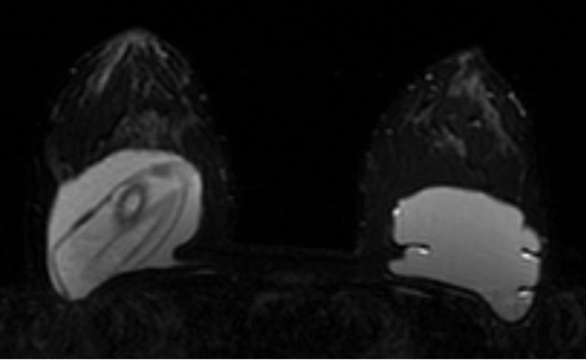
ANormal implants bilaterally(0%)
BBilateral intracapsular implant rupture(4%)
CBilateral extracapsular implant rupture(0%)
DNormal left breast, right side intracapsular rupture(89%)
ENormal left breast, right side extracapsular rupture(6%)
Your answerD
Correct answerD. Normal left breast, right side intracapsular rupture
Vital Concept
Intracapsular rupture occurs when silicone leaks from the implant shell but remains within the fibrous capsule - key MRI signs include the linguine sign (collapsed shell as wavy lines within silicone) and subcapsular lines, with the linguine sign being most diagnostic.
Explanation
Normal left breast, right side intracapsular rupture
Following breast augmentation, the body forms a fibrous capsule around the prosthesis (yellow arrows), the external capsule. This is in addition to the capsule of the implant, or the internal capsule.
The majority of implant ruptures are intracapsular, in which the internally implanted capsule breaks down, leaving silicone remnants that are confined by the external fibrous capsule. Here, axial bilateral unenhanced silicone-hyperintense inversion recovery sequence shows the hypointesne linguine sign (also known as the wavy line sign) in the right breast (blue arrow), which represents the collapsed internal cimplanted capsule and is thus indicative of intracapsular rupture.
The left breast demonstrates radial folds (red arrows), which are a normal finding caused by internal capsular infolding. These can be differentiated from the linguine and keyhole signs, because in radial folds, the capsules do not protrude into the implant lumen.
Incorrect Answers:
A. B. C. E. As discussed above, these are incorrect options.
Vital Concept: Intracapsular rupture occurs when silicone leaks from the implant shell but remains within the fibrous capsule - key MRI signs include the linguine sign (collapsed shell as wavy lines within silicone) and subcapsular lines, with the linguine sign being most diagnostic.
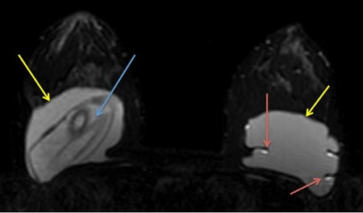
Q11
easy QID 2822
Correct
A 38-year-old female presented to the emergency department with right hip pain following trauma. She was hemodynamically stable but had a limited range of motion and pain at the right hip. A radiograph was performed (not shown). Orthopedic surgery was called and performed a procedure in the emergency department. A CT of the hip was subsequently performed. Which of the following is a common mechanism for this injury?
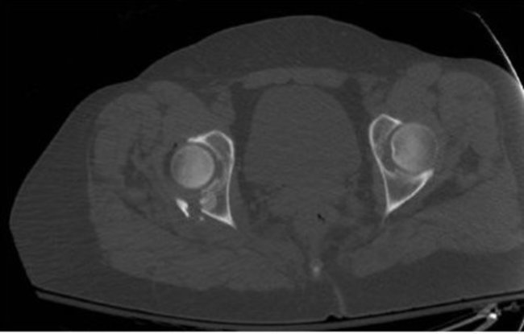
AAnterior hip dislocation(1%)
BPosterior hip dislocation(97%)
CAP pelvic compression(1%)
DLateral pelvic compression(1%)
Your answerB
Correct answerB. Posterior hip dislocation
Vital Concept
Posterior dislocations of the hip are the most common direction of dislocation for this joint, outnumbering anterior dislocations. Posterior dislocation may have associated fractures of the posterior lip of the acetabulum (as seen in this case) and/or injury to the acetabular labrum.
Explanation
Posterior hip dislocation
Axial CT image depicts displaced, comminuted fracture of the right posterior acetabulum secondary to posterior hip dislocation. Posterior hip dislocation is more common than anterior hip dislocation and often is the result of the knee striking the dashboard in seated position during a motor vehicle collision. Prompt evaluation and reduction of the displaced hip is crucial so that avascular necrosis of the femoral head can be avoided (this was the procedure performed by orthopedic surgery).
Incorrect Answers:
A. Anterior acetabular wall fracture occurs in case of anterior hip dislocation.
C. D. Fractures/ligamentous disruption involving the pelvic ring is more commonly associated with these injuries.
Vital Concept: Posterior dislocations of the hip are the most common direction of dislocation for this joint, outnumbering anterior dislocations. Posterior dislocation may have associated fractures of the posterior lip of the acetabulum (as seen in this case) and/or injury to the acetabular labrum.
Q12
hard QID 49058
Correct
Which of the following detector is used in the wipe test?
AGeiger-Muller counter(13%)
BIonization chamber(8%)
CDose calibrator(4%)
DWell counter(76%)
Your answerD
Correct answerD. Well counter
Explanation
Well counter
A well counter is a scintillation detector that uses a photomultiplier tube. It gives great efficiency in detection and is used to quantify very small amounts of radioactivity. While Geiger-Muller counters are good for detecting, well counters are good for counting, as in a wipe test.
Q13
QID 43896
Correct
A 8-year-old male patient with a history of ankle injury several months prior undergoes the study shown. Which of the following is the correct diagnosis?
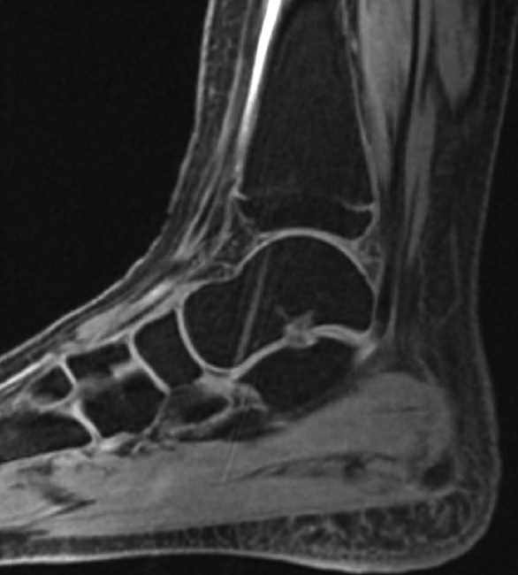
APhyseal bar(88%)
BFracture malunion(2%)
CFracture nonunion(3%)
DChondrolysis(4%)
EOsteonecrosis(3%)
Your answerA
Correct answerA. Physeal bar
Explanation
Physeal bar
The sagittal SPGR MR (physeal sensitive sequence) shows a near-complete central obliteration of the distal tibial growth plate (yellow arrows). The coronal proton density MR redemonstrates this (yellow arrows). Note that the distal fibular growth plate appears normal (blue arrow). Given a history of trauma, this finding represents a physeal bar, or premature closure of the growth plate. Physeal bridges start to form between the first and second months following injury but may not manifest until years later during the adolescent growth spurt. This may lead to tethering with consequent angular deformity or longitudinal growth restriction resulting in leg length discrepancy if extensive.
Incorrect Answers:
B. The articular surface is congruent, and the ankle mortise is maintained, excluding a diagnosis of malunion.
C. No fracture line is apparent to indicate nonunion.
D. Chondrolysis is incorrect. The articular cartilage is normal in signal, thickness, and contours (well seen on the physeal sensitive sequence).
E. There is no evidence of osteonecrosis, which may appear as marrow edema, serpiginous sclerosis (which would appear as low signal lines on the PD sequence), subchondral collapse, or osteochondral injury.
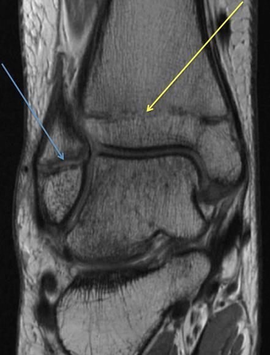
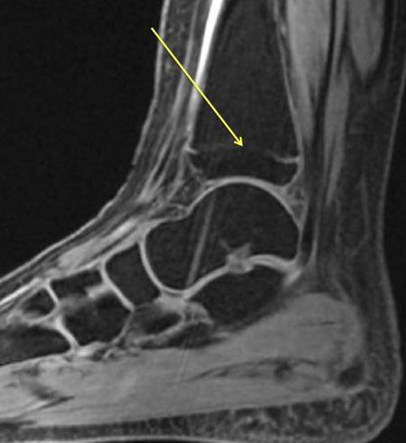
Q14
easy QID 3094
Incorrect
Your patient presents complaining of scrotal pain and undergoes ultrasound. Based on his presentation and ultrasound findings, which of the following is the best next step?
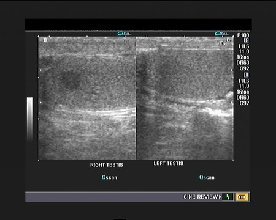
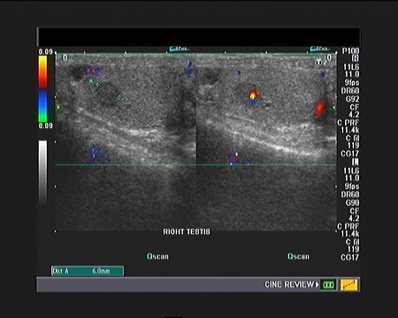
AImmediate surgical exploration(1%)
BCT of abdomen and pelvis(6%)
CObtain serum tumor markers(3%)
DFollow-up ultrasound in 2 to 4 weeks.(85%)
EMRI of scrotum(6%)
Your answerB
Correct answerD. Follow-up ultrasound in 2 to 4 weeks.
Vital Concept
Focal testicular lesions presenting with acute scrotal pain may represent focal orchitis mimicking malignancy, requiring follow-up ultrasound in 2 to 4 weeks to ensure complete resolution. Persistent lesions mandate urological evaluation and tumor marker assessment.
Explanation
Follow-up ultrasound in 2 to 4 weeks.
Given presentation with pain, this finding is suspicious for focal orchitis. However, based on its sonographic appearance with internal color Doppler flow, testicular mass cannot be excluded. Follow-up ultrasound helps differentiate between focal orchitis and testicular malignancy as focal orchitis should improve/resolve with proper treatment, and testicular malignancy would remain similar to increased in size.
Incorrect Answers:
A. Immediate surgery would be prudent in the case of testicular torsion, however, the presence of flow within the lesion suggests inflammatory or neoplastic process rather than ischemic emergency.
B. CT provides no additional information for differentiation of intratesticular lesions and exposes patient to unnecessary radiation.
C. While tumor markers are important in suspected testicular malignancy, obtaining them immediately without follow-up imaging would lead to premature workup. Most focal inflammatory lesions resolve completely, making initial tumor marker assessment unnecessary if this lesion is more consistent with focal orchitis.
E. MRI offers no advantage over ultrasound for acute scrotal evaluation and is significantly more expensive and time-consuming. Ultrasound provides superior resolution for testicular pathology and adequate follow-up assessment.
Vital Concept: Focal testicular lesions presenting with acute scrotal pain may represent focal orchitis mimicking malignancy, requiring follow-up ultrasound in 2 to 4 weeks to ensure complete resolution. Persistent lesions mandate urological evaluation and tumor marker assessment.
Q15
moderate QID 60569
Correct
Which of the following clinical situations does the prostate imaging reporting and data system version 2 (PI-RADS v2) aim to address?
AImprove detection, localization, and risk stratification in suspected prostate cancer in treatment naïve patients(88%)
BScreening asymptomatic patients greater than 40 years old every 5 years(1%)
CAssess for prostate cancer treatment response and recurrence(4%)
DIncreased incorporation of MRI dynamic contrast imaging (DC-MRI) and spectroscopy(7%)
Your answerA
Correct answerA. Improve detection, localization, and risk stratification in suspected prostate cancer in treatment naïve patients
Explanation
Improve detection, localization, and risk stratification in suspected prostate cancer in treatment naïve patients
Explanation:
PI-RADS was created by the American College of Radiology (ACR), the European Society of Urogenital Radiology (ESUR), and the AdMeTech Foundation to provide improved detection, localization, and risk stratification for pre-therapy patients. Multiparametric MRI with T2, diffusion-weighted, and dynamic post-contrast imaging is performed. Subsequently, lesion patterns and signal characteristics are used to provide scores ranging from 1-5 based on tumor location. The classification of each PI-RADS score is shown below:
• PI-RADS 1: very low (clinically significant cancer is highly unlikely to be present)
• PI-RADS 2: low (clinically significant cancer is unlikely to be present)
• PI-RADS 3: intermediate (presence of clinically significant cancer is equivocal)
• PI-RADS 4: high (clinically significant cancer is likely to be present)
• PI-RADS 5: very high (clinically significant cancer is highly likely to be present)
Incorrect Answers:
B. Prostate MRI should not be used as a screening exam due to poor sensitivity/specificity and cost.
C. PI-RADS v2 does not address treatment response or local recurrence.
D. The update from PI-RADS version 1 to 2 has omitted MRI spectroscopy and diminished the role of DCE-MRI
Q16
easy QID 63858
Correct
What is the most likely diagnosis shown in this third trimester ultrasound image?
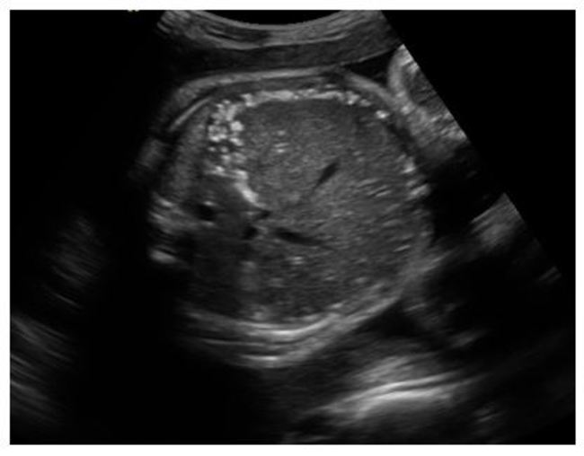
AFetal gallstones(1%)
BHepatic hemangiomas(3%)
CMeconium peritonitis(94%)
DHydrops fetalis(2%)
Your answerC
Correct answerC. Meconium peritonitis
Explanation
Meconium peritonitis
Small hyperechoic foci are seen surrounding the liver compatible with peritoneal calcifications. This is due to intestinal perforation causing a sterile chemical reaction. Calcifications can be seen in as little as 24 hours after rupture.
Incorrect Answers:
A. These calcifications are peritoneal in location, which excludes fetal gallstones.
B. The liver is normal in echotexture with excludes hepatic hemangiomas.
D. Hydrops fetalis is characterized by excess fluid in third spaces such as in the subcutaneous soft tissues, pericardial sac, pleural spaces, and peritoneal cavity, which would appear anechoic, not hyperechoic.
Q17
easy QID 2955
Correct
A 34-year-old female presents to the emergency department and states that she has been "coughing up blood." She said that she has had less severe episodes in the past, but this time produced about a tablespoon of blood. The patient is otherwise healthy with no history of lung cancer and is a non-smoker. There is no history of recent illness or respiratory conditions. Physical examination is unremarkable. Laboratory studies are within normal limits. CT image is provided below. Which of the following is the most likely diagnosis?
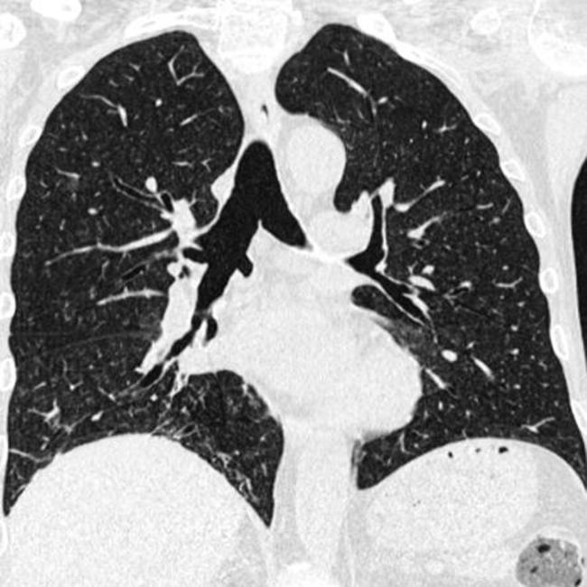
ACongenital pulmonary airway malformation(2%)
BTracheal diverticulum(4%)
CPulmonary sequestration(1%)
DCardiac bronchus(90%)
ERight tracheal bronchus(3%)
Your answerD
Correct answerD. Cardiac bronchus
Vital Concept
Accessory cardiac bronchus causes hemoptysis because it is a blind-ending tubular structure where secretions accumulate and cannot clear, leading to chronic inflammation and hyper-microvascularization at the distal tip. The resulting fragile, inflamed tissue becomes prone to bleeding, making the stagnant secretion environment the underlying mechanism for hemoptysis in this congenital anomaly.
Explanation
Cardiac bronchus
A cardiac bronchus is a variant of the tracheobronchial tree, arising from the medial aspect of the bronchus intermedius just distally from the origin of the right upper lobe bronchus (oval). It appears as a continuation of the lumen of the right main bronchus and projects medially and inferiorly towards the posterior aspect of the heart.
It can vary in size, morphology, and length. While in about half of patients the bronchus is a short, blind-ending bronchial stump, in the remainder, the bronchus has branches and an amount of aerated lung parenchyma. A cardiac bronchus is almost always an incidental finding of CT, as the majority of cardiac bronchi are asymptomatic. However, repeated chest infection or hemoptysis may occur in the lung parenchyma supplied by the bronchus due to abnormal drainage.
Incorrect Answers:
A. Congenital pulmonary airways malformations are multi-cystic masses of segmental lung tissue with abnormal bronchial proliferation. There is a greater male prevalence. The cysts are usually unilateral and involve a single lobe. They are classified into four types based on size. Type I cysts are the most common and are 2 to 10 cm in size. Type II cysts are less than 2 cm in diameter and are associated with other congenital abnormalities. Type 3 cysts are less than 5 mm in diameter but typically involve an entire lobe and carry a poor prognosis. Type IV cysts are unlined cysts that typically affect a single lobe.
Chest radiographs in type I and II malformations demonstrate multicystic, air-filled lesions. Large malformations may cause mass effect with mediastinal shift and may even result in depression and inversion of the diaphragm. In the neonatal period, cysts may be completely or partially fluid-filled with air-fluid levels. Cysts are most commonly discovered on antenatal ultrasounds.
B. A tracheal diverticulum is a subtype of tracheal bronchus. If a tracheal bronchus is present and the right upper-lobe bronchus has a normal trifurcation into apical, posterior, and anterior segmental bronchi, the tracheal bronchus is defined as supernumerary. If the supernumerary bronchus ends blindly, it is called a tracheal diverticulum.
C. Pulmonary sequestration is an aberrant formation of segmental lung tissue that is not connected with the bronchial tree. The age of presentation is dependent on the type of sequestration, which also determines the clinical presentation. Pulmonary sequestration can be divided into two distinct groups based on the relationship of the aberrant segmental lung tissue to the pleura: intra-lobar and extra-lobar. The anomalous tissue has a systemic arterial supply, which is usually a branch of the aorta. Intra-lobar venous drainage commonly occurs via the pulmonary veins, azygous system, portal vein, or the inferior vena cava. Intra-lobar sequestrations are closely connected to the adjacent normal lung and do not have a separate pleura. Conversely, extra-lobar venous drainage occurs through the systemic veins into the right atrium. Extra-lobar sequestrations are separate from the surrounding lung and contain their own pleura. Plain chest radiographs demonstrate an opacity in the affected segment and may show cystic spaces if infected. Treatment is surgical resection.
E. The term tracheal bronchus includes a number of bronchial anomalies that arise in the trachea or main bronchus and are directed toward the upper lobe. The anomalous bronchus usually exits the right lateral wall of the trachea less than 2 cm above the carina and can supply the entire upper lobe or its apical segment. Tracheal bronchi are considered to be either displaced or supernumerary. If the anatomic upper-lobe bronchus is missing a single branch, the tracheal bronchus is called displaced. If the right upper-lobe bronchus has otherwise normal apical, posterior, and anterior segmental bronchi, the tracheal bronchus is called supernumerary. If the supernumerary bronchus ends blindly, it is also called tracheal diverticula. If it ends in aerated or bronchiectatic lung tissue, it is called an apical accessory lung or tracheal lobe. Patients are usually asymptomatic but may also present with persistent or recurrent upper-lobe pneumonia, atelectasis or air trapping, or chronic bronchitis.
Vital Concept: Accessory cardiac bronchus causes hemoptysis because it is a blind-ending tubular structure where secretions accumulate and cannot clear, leading to chronic inflammation and hyper-microvascularization at the distal tip. The resulting fragile, inflamed tissue becomes prone to bleeding, making the stagnant secretion environment the underlying mechanism for hemoptysis in this congenital anomaly.
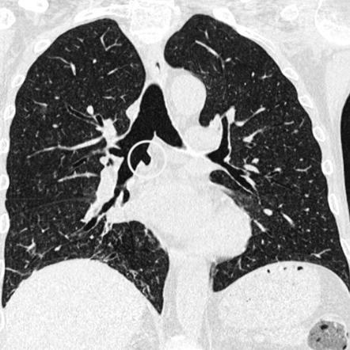
Q18
hard QID 49602
Correct
A one-month-old female patient presents with swelling of the floor of the mouth. Which of the following statements is true?
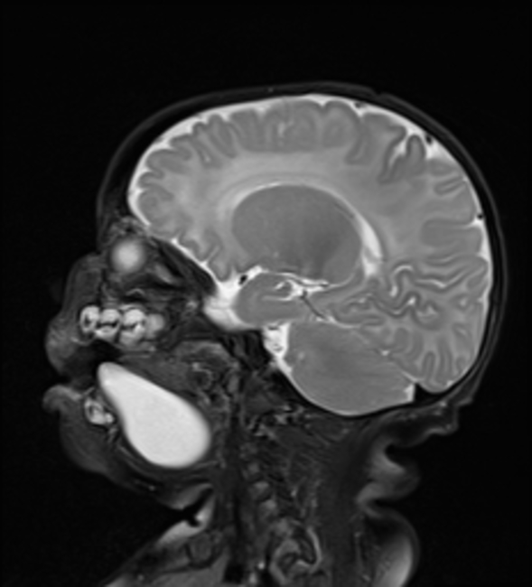
AThe lesion is termed diving or plunging if it herniates into the sublingual space.(33%)
BThis is a sublingual salivary gland lesion.(59%)
CThis requires immediate surgical drainage to prevent airway compromise.(5%)
DThese lesions are always located below the mylohyoid muscle.(4%)
Your answerB
Correct answerB. This is a sublingual salivary gland lesion.
Vital Concept
The oral ranula is confined to the floor of the mouth above the mylohyoid muscle, whereas plunging ranula extends through or around the mylohyoid muscle into the neck, presenting as a submandibular or cervical swelling.
Explanation
This is a sublingual salivary gland lesion.
This is an oral ranula, which is a sublingual salivary gland cyst that extends from the sublingual space, above the mylohoid muscle. They can be simple (sublingual space only), or diving/plunging (sublingual and submandibular spaces).
Treatment is with excision, marsupialization, sclerotherapy, or cyst aspiration.
Incorrect Answers:
A. A plunging ranula is an extravasation of saliva from the sublingual gland due to trauma or obstruction of the duct. Fluid from the obstructed gland dissects between the fascial planes and muscle of the base of the tongue to the submandibular space.
C. Immediate surgical drainage for airway compromise is not usually necessary.
D. As stated above, they are located above the mylohyoid muscle, not below.
Vital Concept: The oral ranula is confined to the floor of the mouth above the mylohyoid muscle, whereas plunging ranula extends through or around the mylohyoid muscle into the neck, presenting as a submandibular or cervical swelling.
Q19
hard QID 44075
Incorrect
A 51-year-old female patient with a history of ovarian cancer undergoes an abdominal computed tomography (CT) scan. Based on the image shown below, which of the following correctly states the stage of their disease?
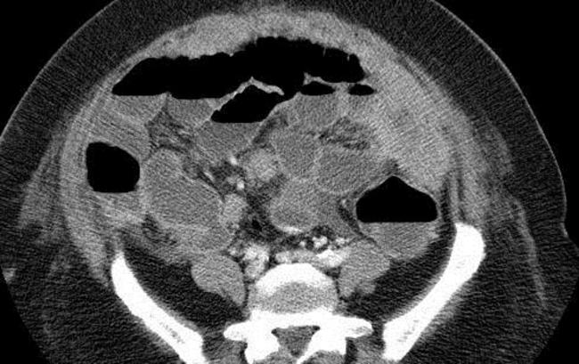
AStage I(0%)
BStage II(1%)
CStage III(35%)
DStage IV(56%)
EStage V(8%)
Your answerD
Correct answerC. Stage III
Vital Concept
Stage III ovarian cancer involves peritoneal spread beyond the pelvis and/or retroperitoneal lymph node metastases. Imaging shows peritoneal implants, ascites, and possible lymphadenopathy - findings that indicate need for neoadjuvant chemotherapy rather than primary cytoreductive surgery if disease burden is extensive.
Explanation
Stage III
C. Stage III
The image demonstrates thick peritoneal (yellow arrow) and serosal (blue arrow) abdominal implants. Ovarian cancer is most often staged using the FIGO system. Stage III tumor involves one or both ovaries with cytologically or histologically confirmed spread to the peritoneum outside the pelvis, metastasis to retroperitoneal lymph nodes, or both. The majority of ovarian cancers present as stage III (84% are stage IIIC) and are high-grade serous carcinomas (HGSCs).
Incorrect Answers:
A. Stage I ovarian cancer is relatively rare because most patients are diagnosed in higher stages (stages III and IV), but it is associated with excellent survival rates. The most significant update in the FIGO staging system for stage I ovarian cancer is that the system now considers the fallopian tube and peritoneal origins of ovarian tumors collectively. Also, with regard to time and cause of capsule rupture, stage IC has been subdivided to specify intraoperative rupture (IC1) or preoperative rupture (IC2) with malignant ascites or positive peritoneal washings (IC3). When evaluating patients with stage I ovarian cancer, radiologists must remember that bilateral tumors with a unilateral dominant mass and contralateral multiple or small masses may actually represent metastatic disease in up to 30% of patients.
B. Stage II ovarian cancer remains controversial and difficult to define. At this stage, tumor involves one or both ovaries or fallopian tubes with direct extension, implants on the surface of the uterus, implants on the fallopian tubes, or some combination of those features (IIA) or it extends to other pelvic intraperitoneal tissues (below the pelvic brim) (IIB). This group makes up less than 10% of tumors and is considered curable. All stage II tumors are treated with chemotherapy.
D. Stage IV is defined as distant metastatic disease. This stage includes patients with pleural effusion with positive cytology (stage IVA), parenchymal liver or splenic metastases, and extraabdominal metastases including inguinal and supraclavicular lymph nodes as well as those with transmural involvement of visceral structures (stage IVB). Twelve percent to 21% of patients with ovarian cancer present with stage IV disease.
E. There is no stage V in FIGO staging for ovarian cancer.
Vital Concept: Stage III ovarian cancer involves peritoneal spread beyond the pelvis and/or retroperitoneal lymph node metastases. Imaging shows peritoneal implants, ascites, and possible lymphadenopathy - findings that indicate need for neoadjuvant chemotherapy rather than primary cytoreductive surgery if disease burden is extensive.
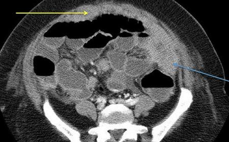
Q20
easy QID 3015
Correct
Incidental finding on ultrasonography of a late second trimester pregnancy. Which of the following is the correct finding?
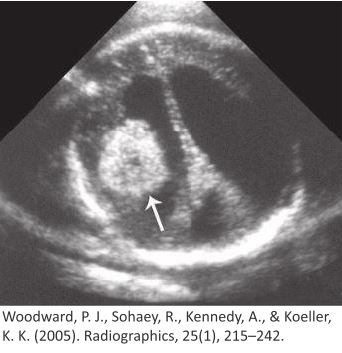
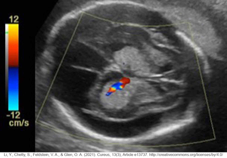
ANormal fetal brain; abnormality seen is due to imaging artifacts(3%)
Large echogenic intraventricular mass most likely choroid plexus papilloma—benign tumor more common than carcinoma in fetal/neonatal period. Rapid growth typical in neonatal papillomas. Excellent prognosis with complete resection, but imaging cannot distinguish from malignant carcinoma prenatally. Though most cases are sporadic, risk factors include male sex, genetic syndromes (Li-Fraumeni, Aicardi), and viral exposure.
Explanation
Abnormal; evidence of intra-ventricular mass, possibly choroid plexus papilloma
This study shows a gross abnormality involving the fetal brain. There is a definite right intra-ventricular mass most likely arising from the choroid plexus in the right lateral ventricle (arrow). Further studies proved this to be a choroid plexus papilloma.
Incorrect Answers:
A. This is definitely abnormal.
B. The presence of a feeding vessel in the second image (color Doppler study) suggests this lesion is not a hematoma, but a neoplasm.
D. The cranial vault is well-preserved.
E. The mass is entirely intracranial.
Vital Concept: Large echogenic intraventricular mass most likely choroid plexus papilloma—benign tumor more common than carcinoma in fetal/neonatal period. Rapid growth typical in neonatal papillomas. Excellent prognosis with complete resection, but imaging cannot distinguish from malignant carcinoma prenatally. Though most cases are sporadic, risk factors include male sex, genetic syndromes (Li-Fraumeni, Aicardi), and viral exposure.
Q21
hard QID 48955
Incorrect
Which word best describes the ambient light intensity, which typically should not exceed 50 lumens/m2?
ALuminance(50%)
BReflection(1%)
CIlluminance(48%)
DShuttering(0%)
Your answerA
Correct answerC. Illuminance
Vital Concept
Maximum recommended reading room ambient lighting/illuminance is 50 lux. This should be comparable to standing under a streetlight at night.
Explanation
Illuminance
Illuminance is ambient light intensity, measured in lumens/m2 or lux. About 20 to 40 lux is acceptable for a reading room and should not exceed 50 lux.
Incorrect Answers:
A. Luminance is the amount of light detected by the human eye emitted from a flat surface, or simply the brightness of the monitor. It is measured in candela/m2.
B. The amount of ambient light reflected from a surface is a result of the material on the surface and is expressed as the ambient reflection coefficient.
D. Shuttering is a post-exposure technique that can eliminate ambient light surrounding a displayed image.
Vital Concept: Maximum recommended reading room ambient lighting/illuminance is 50 lux. This should be comparable to standing under a streetlight at night.
Q22
hard QID 60577
Correct
A molybdenum-99/Tc-99m generator system is used to produce Tc-99m for nuclear medicine examinations in your department. What is the maximum ratio of molybdenum (Mo-99) relative to technetium (Tc-99m) permissible under the Nuclear Regulatory Commission guidelines to ensure radionuclide purity?
A0.15 millicuries of Mo-99 per 1 millicurie of Tc-99m at the time of administration(5%)
B0.15 microcuries of Mo-99 per 1 millicurie of Tc-99m at the time of production(26%)
C0.30 microcuries of Mo-99 per 1 millicurie of Tc-99m at the time of production(1%)
D0.15 microcuries of Mo-99 per 1 millicurie of Tc-99m at the time of administration(68%)
Your answerD
Correct answerD. 0.15 microcuries of Mo-99 per 1 millicurie of Tc-99m at the time of administration
Explanation
0.15 microcuries of Mo-99 per 1 millicurie of Tc-99m at the time of administration
Explanation:
The Nuclear Regulatory Commission allows up to 0.15 microcuries of Mo-99 per 1 millicurie of Tc-99m at the time of administration to ensure radionuclide purity. When isotonic saline passes through the alumina column the generator, trace amounts of Mo-99 contaminate the product. If administered to the patient, Mo-99 causes unnecessary radiation due to its beta decay and relatively long half-life. This “breakthrough” Mo-99 can be measured by placing a lead shield around the sample and measuring activity in a dose calibrator. High energy gamma rays from the Mo-99 will be able to pass through the shield and be assayed, while those from Tc-99m will not. The Tc -99m activity can then be measured and a ratio can subsequently be calculated. Additional calculations can then be performed to see what the ratio will be at the time of patient administration.
Incorrect Answers:
A. The units associated with Mo-99 should be microcuries, not millicuries.
B. Although the ratio and units are correct, the maximal permissible level is at the time of patient administration rather than at the time of production.
C. The permissible ratio is 0.15 microcuries of Mo-99 per 1 millicurie of Tc-99m, not 0.30.
Q23
hard QID 4977
Correct
A 58-year-old female presents with acute renal failure. A Technetium-99m mercaptoacetyltriglycine (MAG-3) study was performed. The split renal function is 48% left, 52% right. Which of the following is the most likely diagnosis based on the findings given?
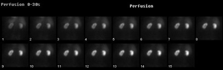
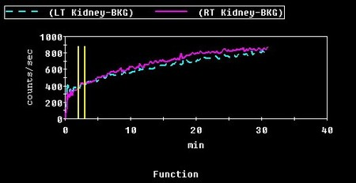
AUnilateral high-grade obstruction(16%)
BAcute tubular necrosis(80%)
CBilateral renal artery occlusion(2%)
DAcute renal vein thrombosis(2%)
Your answerB
Correct answerB. Acute tubular necrosis
Vital Concept
Progressive bilateral reniform tracer accumulation without excretion on MAG3 scan indicates severe bilateral renal dysfunction where kidneys retain perfusion and tubular uptake capacity but have lost excretory function—this pattern is characteristic of acute tubular necrosis. Normal renogram would also show bilateral reniform tracer accumulation, but should also show subsequent decrease of tracer as excretion occurs, usually seen within 3-5 minutes.
Explanation
Acute tubular necrosis
Symmetrical, normal bilateral renal perfusion is demonstrated without evidence of renal excretion (persistent nephrograms with rising renogram curves). This constellation of findings is compatible with acute tubular necrosis (ATN). Acute tubular necrosis is the most common form of acute, reversible renal failure in transplant patients, usually seen within 24 hours.
Additional causes of ATN include renal ischemia from surgery or pregnancy, and nephrotoxins (iodinated contrast material, aminoglycosides, antineoplastic agents, hemoglobin, myoglobin, and chemicals such as organic solvents).
Incorrect Answers:
A. Unilateral high-grade obstruction would result in asymmetric abnormality during the excretory phase of the curve. There is no evidence of excretion on either side seen here, and the kidneys appear symmetric.
C. Bilateral renal artery occlusion would show decreased flow to the left and right kidneys.
D. Acute renal vein thrombosis would show enlargement of the kidneys with severely diminished flow with a progressive rise in cortical tracer.
Vital Concept: Progressive bilateral reniform tracer accumulation without excretion on MAG3 scan indicates severe bilateral renal dysfunction where kidneys retain perfusion and tubular uptake capacity but have lost excretory function—this pattern is characteristic of acute tubular necrosis. Normal renogram would also show bilateral reniform tracer accumulation, but should also show subsequent decrease of tracer as excretion occurs, usually seen within 3-5 minutes.
Q24
easy QID 21110
Correct
A 35-year-old male patient presents for an imaging workup for repeated bouts of pancreatitis. Which of the following is the most likely diagnosis?
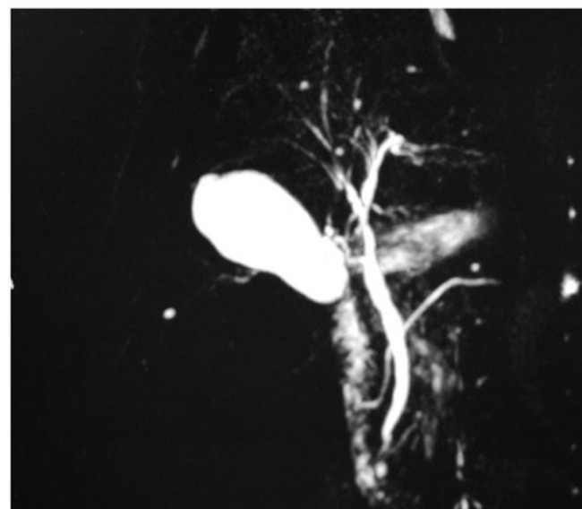
AChronic pancreatitis(1%)
BAlcohol-related pancreatitis(0%)
CCholangiocarcinoma(0%)
DPancreatic adenocarcinoma(0%)
EPancreas divisum(99%)
Your answerE
Correct answerE. Pancreas divisum
Explanation
Pancreas divisum
Pancreas divisum is a failure of fusion of the dorsal and ventral pancreatic buds during embryological development. Normally, the ventral and dorsal pancreatic ducts should join before emptying into the major duodenal papilla. However, in pancreas divisum (as depicted in two examples below), the ventral pancreatic duct of Wirsung, blue arrow, draining the small portion of the head and uncinate process, drains into the major papilla with the CBD, yellow arrow. The dorsal pancreatic duct of Santorini drains the remainder of the pancreas into the minor papilla, white arrow. This is frequently seen on imaging with the dorsal pancreatic duct crossing over the common bile duct to reach the minor papilla. This arrangement may contribute to multiple bouts of pancreatitis in an otherwise normal patient.
Incorrect Answers:
A. Chronic pancreatitis is characterized by atrophy of the pancreatic parenchyma, segmental pancreatic duct dilatation, and coarse pancreatic parenchymal calcifications.
B. Alcoholic pancreatitis is a frequent cause of acute pancreatitis with the typical findings of peripancreatic fat stranding and fluid and an acutely swollen, edematous pancreas. One should be wary of superimposed signs of chronic pancreatitis in patients with chronic alcohol use disorder.
C. Cholangiocarcinoma is a commonly encountered mass lesion of the biliary ducts. On MRCP, one would expect to see an intraluminal filling defect with or without associated proximal biliary duct dilatation.
D. Pancreatic ductal adenocarcinomas appear as heterogeneously enhancing masses with obstruction of the pancreatic duct and often of the common bile duct (the double duct sign). They frequently may present clinically with painless jaundice. If there is an associated palpable gallbladder, this is known as the Courvoisier sign.
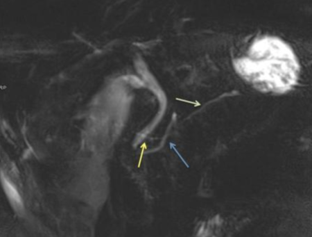
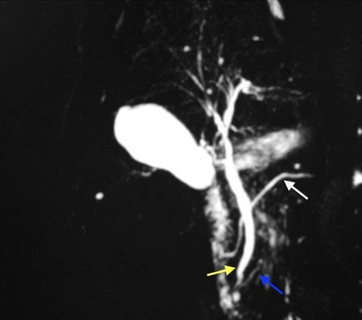
Q25
hard QID 38128
Incorrect
A 2-year-old patient with a limp undergoes a bone scan after being diagnosed with bilateral ankle fractures on radiographs. Which of the following is the likely diagnosis?
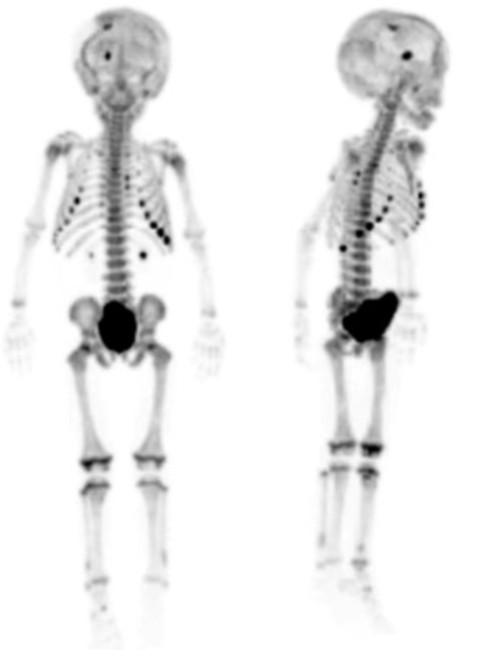
ALymphoma(1%)
BNeuroblastoma(10%)
COsteomyelitis(0%)
DNon-accidental trauma(78%)
EEosinophilic granuloma(12%)
Your answerB
Correct answerD. Non-accidental trauma
Vital Concept
Radionuclide scans can be useful in locating sites of fractures and other injuries.
Explanation
Non-accidental trauma
The planar Tc99m-MDP bone scan shows abnormal focal tracer uptake in multiple thoracic vertebrae, multiple bilateral costovertebral joints, both fibulas, and the right foot, which are highly concerning for sites of trauma (yellow arrows). Additionally, there is tracer uptake in the brain, the right basal ganglia, and the right parietal region (red arrows), likely representing areas of infarction or hemorrhage. These findings are highly suggestive of non-accidental trauma.
Incorrect Answers:
A. Lymphoma, either primary osseous or metastatic, may show multiple sites of bony uptake. However, it would appear more patchy and less focal, as seen in these healing fractures. Further, the distribution seen here (ribs) is characteristic of abuse.
B. Neuroblastoma, similar to lymphoma, should have a patchier appearance of tracer uptake and a more random distribution. Additionally, up to half of primary neuroblastomas will have affinity for MDP, and no primary mass is seen in this case.
C. Osteomyelitis, even when multifocal, would not have this appearance. In young children, it has a predilection for epiphyses and metaphyses. Additionally, this does not explain the intracranial uptake.
E. Eosinophilic granuloma produces lytic bone lesions, which should appear photopenic.
Vital Concept: Radionuclide scans can be useful in locating sites of fractures and other injuries.
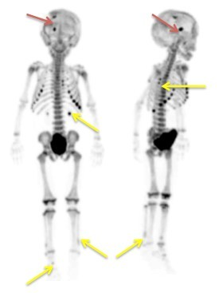
Q26
moderate QID 5089
Correct
A 34-year-old female presents with wrist pain after a fall. The radiographs below were obtained. Which of the following is the most likely diagnosis?
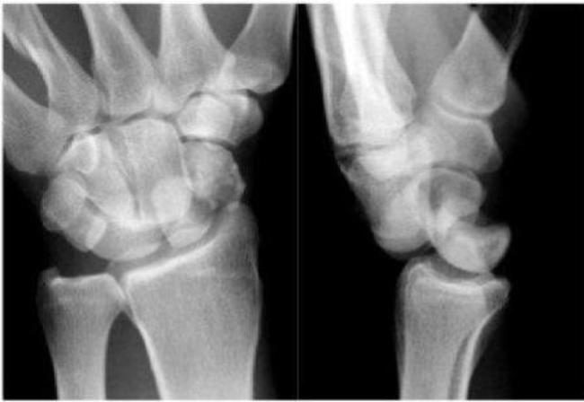
AScapholunate dissociation(1%)
BPerilunate dislocation(82%)
CVolar perilunate dislocation(4%)
DMidcarpal dislocation(8%)
ELunate dislocation(5%)
Your answerB
Correct answerB. Perilunate dislocation
Vital Concept
Trans-scaphoid perilunate dislocation is best appreciated on lateral radiograph with dorsal dislocation of the capitate with respect to the lunate and maintained radiolunate articulation.
Explanation
Perilunate dislocation
The imaged findings constitute a trans-scaphoid perilunate dislocation. The frontal radiograph demonstrates disruption of Gilula's carpal arcs with an abnormally triangular appearance of the lunate (arrowheads), which is normally rhomboid on frontal projection. There is also an acute fracture of the scaphoid waist (arrow), which is common in perilunate dislocations. The lateral radiograph demonstrates dorsal displacement of the capitate with preservation of the radiolunate articulation (blue line), a key feature distinguishing this entity from a lunate dislocation, in which the radiolunate articulation is disrupted. Mayfield et al. categorized perilunate carpal instability into scapholunate diastasis (stage I), perilunate dislocation (stage II), midcarpal dislocation (stage III), and lunate dislocation (stage IV). Each of these is produced by forced wrist hyperextension (e.g., fall on outstretched hand). Despite the obvious radiographic abnormality, perilunate dislocations are underdiagnosed clinically.
Incorrect Answers:
A. Scapholunate dissociation results from the same mechanism of injury (forced wrist hyperextension) as the correct diagnosis but involves only scapholunate ligament disruption without carpal subluxation or dislocation. In this case, there may be disruption of the scapholunate ligament, but the presence of midcarpal dislocation excludes scapholunate dissociation as the best diagnosis.
C. Volar perilunate dislocation results from the same mechanism of injury (forced wrist hyperextension) as the correct diagnosis but is much less common, accounting for only 3% of perilunate dislocations and involves volar dislocation of the carpus relative to an intact radiolunate articulation. In this case, there is dorsal dislocation of the carpus relative to an intact radiolunate joint, excluding volar perilunate dislocation as a possible diagnosis. The exact mechanism of volar perilunate dislocation is unclear, as the process results from the same forced wrist hyperextension as conventional (dorsal) perilunate dislocation.
D. Midcarpal dislocation results from the same mechanism of injury (forced wrist hyperextension) as the correct diagnosis but involves volar subluxation of the lunate and dorsal dislocation of the capitate. In this case, the radiolunate articulation has been maintained, excluding a midcarpal dislocation.
E. Lunate dislocation results from the same mechanism of injury (forced wrist hyperextension) as the correct diagnosis but involves volar dislocation of the lunate. In this case, the radiolunate articulation has been maintained, excluding a lunate dislocation.
Vital Concept: Trans-scaphoid perilunate dislocation is best appreciated on lateral radiograph with dorsal dislocation of the capitate with respect to the lunate and maintained radiolunate articulation.
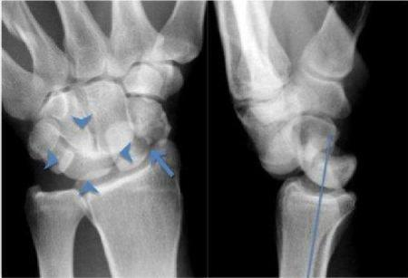
Q27
easy QID 4986
Correct
A 31-year-old female presents with pain in the forefoot. Review the MRI images of the foot. The abnormality indicated by the arrow most likely represents:
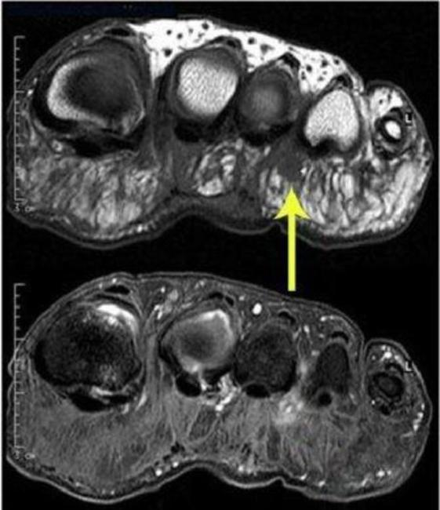
AGanglion cyst(1%)
BPlantar fibroma(3%)
CMorton neuroma(95%)
DLipoma(0%)
ESynovitis(1%)
Your answerC
Correct answerC. Morton neuroma
Vital Concept
Morton's neuroma appears as an ovoid mass with low to intermediate signal on all MRI sequences, reflecting perineural fibrosis. When there is superimposed inflammation/edema, increased T2 signal may be seen within this lesion and in the surrounding soft tissues, as in this case.
Explanation
Morton neuroma
The images show a 2 to 3 mm solid lesion along the plantar surface of the foot in the third intermetatarsal space (between third and fourth metatarsal heads). The lesion is hypo- to isointense compared to muscle on T1-weighted imaging with increased T2 signal of this finding and in the surrounding soft tissues, most compatible with superimposed edema/inflammatory change. The location and appearance are pathognomonic for a Morton neuroma. They are most commonly in the third intermetatarsal space and virtually always occur on the plantar side of the transverse metatarsal ligament. There is a marked female predominance (approximately 18:1), thought to be related to high-heeled shoes.
Incorrect Answers:
A. There is no evidence of a cystic lesion to suggest a ganglion cyst.
B. While fibroma would be in the differential diagnosis, the location is highly suggestive of a Morton neuroma.
D. Lipoma does not work here; this lesion does not follow fat signal on the provided images.
E. The location is not typical for synovitis and is highly suggestive of a Morton neuroma.
Vital Concept: Morton's neuroma appears as an ovoid mass with low to intermediate signal on all MRI sequences, reflecting perineural fibrosis. When there is superimposed inflammation/edema, increased T2 signal may be seen within this lesion and in the surrounding soft tissues, as in this case.
Q28
hard QID 37418
Incorrect
A 58-year-old female patient with a new palpable right breast mass undergoes diagnostic mammography followed by ultrasound, which shows a spiculated mass at this site. The patient subsequently undergoes an excisional biopsy. The pathology results reveal invasive lobular carcinoma with two sites of positive margins. The patient prefers breast conservation if anything more needs to be done. Breast MRI was performed about 6 weeks later with representative image of the resection site shown below. Aside from the findings related to the resection site, no other sites of disease are identified on MRI evaluation. Based on the findings, which of the following is the most appropriate management?
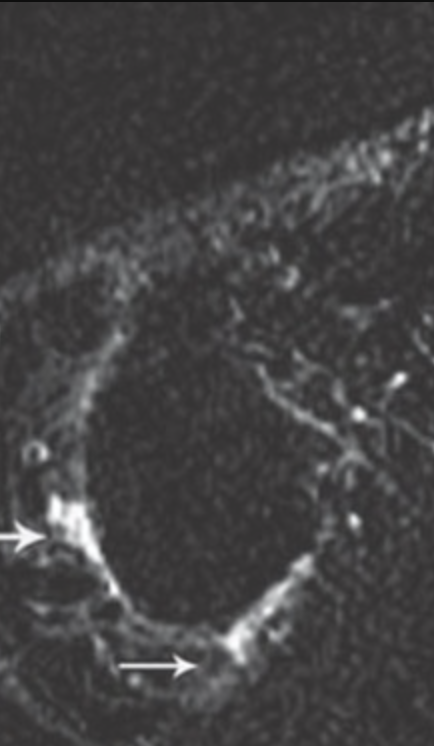
ABI-RADS 3 designation and short-interval surveillance.(2%)
BMammography to establish a post-procedural baseline.(6%)
CNo further actions are necessary.(1%)
DRe-excision.(62%)
EMastectomy.(30%)
Your answerA
Correct answerD. Re-excision.
Vital Concept
In invasive lobular carcinoma, preoperative MRI multifocality and non-mass enhancement predict positive resection margins, with multifocality being the strongest predictor. These features help guide surgical planning toward wider excision or mastectomy.
Explanation
Re-excision.
The sagittal contrast-enhanced subtraction MR shows nodular enhancement (white arrows) of anterior and inferior margins of the operative bed (blue arrows). Based on the positive surgical margins, this likely represents a site of residual disease. No other disease foci are present. As such, re-excision is indicated to remove all the sites of the primary malignancy.
Obtaining clear surgical margins after breast conservation therapy for invasive lobular carcinoma is more difficult than for invasive ductal carcinoma due to the infiltrative growth pattern and the tendency for multifocal and multicentric tumor growth.
In cases of breast conservation therapy with positive surgical margins, MRI is helpful in differentiating whether the patient would be better served by mastectomy than re-excision.
Incorrect Answers:
A. B. C. Although postoperative granulation tissue will also be seen as an enhancement at the margins of the operative bed, the concomitant pathology results make attributing these findings solely to postoperative changes inappropriate. The enhancement is suspicious and actionable.
E. If the MRI had demonstrated multifocal or multicentric disease, a mastectomy would be a more appropriate treatment option.
Vital Concept: In invasive lobular carcinoma, preoperative MRI multifocality and non-mass enhancement predict positive resection margins, with multifocality being the strongest predictor. These features help guide surgical planning toward wider excision or mastectomy.
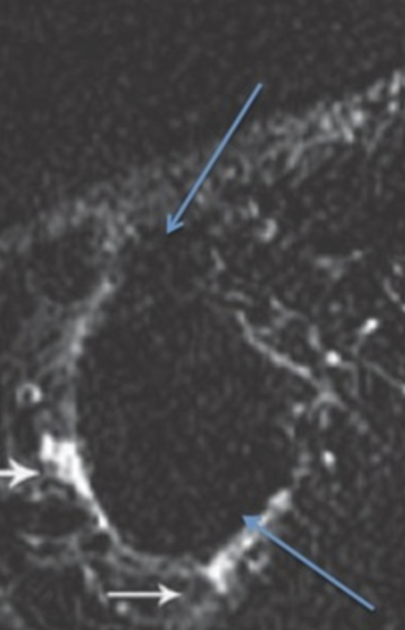
Q29
hard QID 20804
Correct
The given images were acquired from a 25-year-old male patient recently diagnosed with neurocysticercosis, as shown on the magnetic resonance images below. The patient is also presenting with a new onset of seizures, headaches, and confusion. The remainder of the exam is normal. Which of the following is the most likely stage of the visible lesions based on the constellation of symptoms and images?
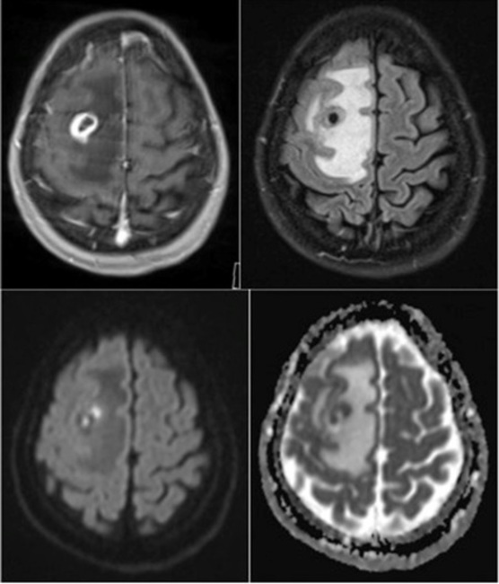
ANodular vesicular(7%)
BVesicular stage(12%)
CColloidal vesicular stage(71%)
DGranular nodular stage(5%)
ENodular calcified stage(4%)
Your answerC
Correct answerC. Colloidal vesicular stage
Explanation
Colloidal vesicular stage
There are four main stages of neurocysticercosis (also known as Escobar's pathological stages):
vesicular: viable parasite with intact membrane and therefore no host reaction
colloidal vesicular: parasite dies within 4-5 years untreated, or earlier with treatment and the cyst fluid becomes turbid. As the membrane becomes leaky edema surrounds the cyst. This is the most symptomatic stage
granular nodular: edema decreases as the cyst retract further; enhancement persists
nodular calcified: end-stage quiescent calcified cyst remnant; no edema
Given this patient's symptom array and the T1-weighted post-contrast MRI demonstrating a lesion with prominent ring-enhancement (arrow) in the right frontal lobe with extensive perilesional edema on FLAIR imaging (arrowheads), this patient most likely is in the colloidal vesicular stage.
Also commonly seen in the colloidal vesicular stage, but not clearly shown in the images, is an enhancing eccentrically located intralesional nodule. Several other similar lesions were present (not shown).
Incorrect Answers:
A. There are only four stages in the progression of neurocysticercosis: vesicular, colloidal vesicular, granular nodular, and nodular calcified.
B. Neurocysticercosis in the vesicular stage appears as multiple small round lesions that follow CSF attenuation on CT and CSF signal intensity on MRI. Vesicular stage lesions also classically have a punctate focus of high attenuation eccentrically within the cyst representing the larva protoscolex.
Of note, in the vesicular stage, there is little or no perilesional edema and ring-enhancement is not present. The presence of ring-enhancement (blue arrow) and extensive perilesional edema (arrowheads) in this case suggest a different stage of disease.
D. Granular nodular stage is a reasonable alternative. The MRI appearance of neurocysticercosis in the granular nodular stage reflects partial healing and retraction of the lesion. As such, granular nodular stage lesions appear smaller, with nodular enhancement but less ring-enhancement, and with less perilesional edema than those of the earlier colloidal vesicular stage. The prominent ring-enhancement (blue arrow) and extensive surrounding edema (arrowheads) seen in this case suggests an alternative stage.
E. In the nodular calcified stage, neurocysticercosis represents healed disease and appears as multiple small focal calcified nodules without an appreciable cystic component or perilesional edema. The presence of an enhancing lesion with a cystic component and extensive perilesional edema suggests an alternative stage of disease.
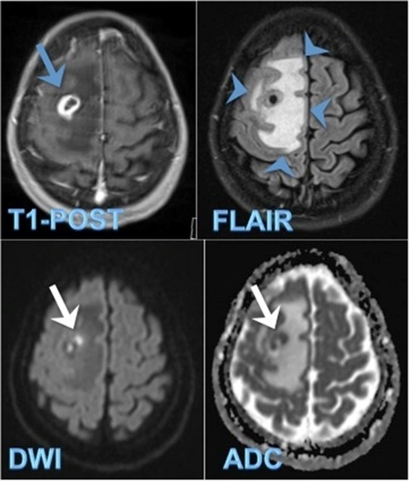
Q30
hard QID 38133
Correct
A 37-year-old female patient with abdominal pain undergoes an ultrasound. Which of the following would be the most likely diagnosis?
APancreatic or ampullary mass(5%)
BCholedocholithiasis(62%)
CRecurrent pyogenic cholangitis(11%)
DPrimary sclerosing cholangitis(19%)
Your answerB
Correct answerB. Choledocholithiasis
Explanation
Choledocholithiasis
One can tell these are biliary ducts (yellow arrows) and not vessels because they do not have a hyperechoic wall (see the purple arrow on the right portal vein for comparison). This appearance has a long differential diagnosis.
Choledocholithiasis is a common condition in which stones pass from the gallbladder into the biliary ducts or form within the ducts themselves. Sonographically, one may see intra- and extrahepatic dilation with or without the stone if it has not yet passed, and depending on its echogenicity. The blue arrow shows the inferior vena cava (IVC).
Incorrect Answers:
A. A downstream block at the common bile duct or sphincter of Oddi from a pancreatic or ampullary mass may have this appearance, often presenting clinically with painless jaundice.
C. Recurrent pyogenic cholangiohepatitis is a condition found in Southeast Asia and is caused by hepatobiliary infestation with Clonorchis sinensis (liver fluke). Intra- and extrahepatic biliary dilatation develop due to multilevel strictures, often with calculi within them.
D. Primary sclerosing cholangitis (PSC) is an uncommon idiopathic inflammatory condition that affects the biliary tree, resulting in multiple strictures and eventual cirrhosis in its later stages. Ultrasound is able to demonstrate both the changes of cirrhosis and irregularity of intra- and extrahepatic bile duct caliber. When PSC is limited to intrahepatic biliary tree, it can be difficult to distinguish from primary biliary cirrhosis.
Q31
hard QID 2864
Incorrect
A 22-year-old female with no significant past medical history presents with intermittent positional headaches that are worse when upright. The following head computed tomography (CT) was obtained. Which of the following is true regarding the findings?
AThe findings are related to subclinical trauma.(2%)
BThe patient should be referred to neurosurgery for surgical consultation.(63%)
CThe findings are incidental and no further workup or intervention is necessary.(19%)
DA search for a primary malignancy should be recommended.(0%)
EApproximately 15% of patients are symptomatic.(16%)
Your answerC
Correct answerB. The patient should be referred to neurosurgery for surgical consultation.
Vital Concept
The classic triad of third ventricular hyperattenuating lesion, intermittent positional headaches, and foramen of Monro location strongly suggests colloid cyst, requiring MRI confirmation and neurosurgical evaluation due to risk of sudden neurological deterioration from acute CSF obstruction.
Explanation
The patient should be referred to neurosurgery for surgical consultation.
The combination of hyperattenuating third ventricular lesion and intermittent positional headaches (worse upright, better supine) is highly suggestive of colloid cyst. MRI may be considered for confirmation as it demonstrates the pathognomonic T1 hyperintense/T2 hypointense signal pattern that distinguishes colloid cysts from other less likely third ventricle lesions; MRI will also aid in surgical planning. If MRI confirms colloid cyst as expected, neurosurgical consultation for surgical planning is a reasonable next step. Even without current hydrocephalus, colloid cysts can cause acute deterioration in up to one-third of symptomatic patients due to sudden CSF obstruction.
Incorrect Answers:
A. The imaging findings are most characteristic of a colloid cyst and are not related to trauma.
C. While almost 50% of colloid cysts are discovered incidentally, surgical resection is recommended if symptomatic as even small lesions can acutely obstruct, resulting in herniation and rapid death.
D. The round hyperdense lesion located at the foramen of Monro is nearly pathognomonic for a colloid cyst. The appearance, patient age, and location are unusual for metastatic disease.
E. Approximately 50% of patients are asymptomatic.
Vital Concept: The classic triad of third ventricular hyperattenuating lesion, intermittent positional headaches, and foramen of Monro location strongly suggests colloid cyst, requiring MRI confirmation and neurosurgical evaluation due to risk of sudden neurological deterioration from acute CSF obstruction.
Q32
hard QID 18060
Correct
Which of the following is the most likely injured structure in this 35-year-old male with a history of dislocated elbow, elbow swelling, and pain?
AMedial ulnar collateral ligament(75%)
BLateral ulnar collateral ligament(18%)
CAnnular ligament(2%)
DRadial collateral ligament(5%)
Your answerA
Correct answerA. Medial ulnar collateral ligament
Vital Concept
The anterior bundle of the ulnar collateral ligament appears as a low signal band on coronal MRI extending from the medial epicondyle to the sublime tubercle. Complete tears demonstrate focal discontinuity, surrounding edema, and abnormal laxity, requiring evaluation in both coronal and axial planes to determine tear location and distinguish the UCL from adjacent flexor tendons.
Explanation
Medial ulnar collateral ligament
The medial ulnar collateral ligament, or the ulnar collateral ligament complex, is formed of 3 separate bands: anterior, posterior, and transverse. These bands can usually be identified by examining the different MRI sequences and obliquities. On this coronal T2WI there is complete tear of the anterior band of the ulnar collateral ligament complex, medial soft tissue edema, and small joint effusion.
Incorrect Answers:
B. The lateral ulnar collateral ligament attaches proximally to the anteroinferior aspect of the lateral epicondyle and distally to the supinator crest of the ulna. It is one of 4 ligaments forming the radial collateral ligament complex (radial collateral ligament, lateral ulnar collateral ligament, annular ligament, and accessory lateral collateral ligament).
C. D. These are part of the radial collateral ligament complex.
Vital Concept: The anterior bundle of the ulnar collateral ligament appears as a low signal band on coronal MRI extending from the medial epicondyle to the sublime tubercle. Complete tears demonstrate focal discontinuity, surrounding edema, and abnormal laxity, requiring evaluation in both coronal and axial planes to determine tear location and distinguish the UCL from adjacent flexor tendons.
Q33
moderate QID 2712
Correct
Which of the following cardiac MRI sequences would best evaluate shunt severity in a ventricular septal defect?
AGadolinium enhancement(11%)
BPhase contrast(81%)
CTime of flight(6%)
DT2 weighted spin echo(3%)
Your answerB
Correct answerB. Phase contrast
Vital Concept
Phase contrast cardiac MRI is used to image blood flow dynamics. It can be used to calculate pulmonary and systemic blood flow, determine shunt fractions, as well as calculate regurgitant fractions.
Explanation
Phase contrast
Usually implemented via GRE sequences, phase contrast imaging is a velocity-encoded technique that allows for calculation of shunt fractions. Despite its name, this is a noncontrast sequence.
Incorrect Answers:
A. Gadolinium enhancement is used to further characterize a wide variety of cardiac disease, such as ischemia, infarct, myocarditis, amyloidosis, sarcoidosis. Gadolinium enhanced images are not optimal for evaluation of shunt fraction.
C. TOF helps to evaluate coronary artery patency and for stenoses/aneurysms. This would be less optimal for shunt fraction evaluation compared to phase contrast imaging.
D. T2 weighted spin echo images are suited for evaluation of myocardial edema in the setting of infarct or inflammation. This sequence would not provide data useful for calculating shunt fraction.
Vital Concept: Phase contrast cardiac MRI is used to image blood flow dynamics. It can be used to calculate pulmonary and systemic blood flow, determine shunt fractions, as well as calculate regurgitant fractions.
Q34
hard QID 18058
Correct
Given these images of a 45-year-old female who has chronic posterior foot pain, which of the following is the most likely diagnosis?
AComplete distal Achilles tendon tear(8%)
BHaglund's syndrome(71%)
CParatenonitis(20%)
DPosterior calcaneal fracture(0%)
Your answerB
Correct answerB. Haglund's syndrome
Vital Concept
This patient has Haglund's syndrome. It refers to a triad of distal insertional Achilles tendinopathy (blue arrow), retro-calcaneal bursitis (red arrow), and retro Achilles bursitis (green arrow). Insertional Achilles tendinopathy can have a very high signal on T2WI or STIR and simulate a tendon tear. The pain is typically 2 to 3 cm proximal to Achilles tendon insertion.
Explanation
Haglund's syndrome
Haglund's syndrome, also known as the "pump bump," usually occurs in females who wear high heels, or older adults with a tight heel cord. More important than the shoe style is the presence of a stiff-heel counter which compresses the retro-Achilles bursa against the posterior lateral calcaneal prominence and subsequently leads to hypertrophy of the calcaneal tuberosity. This hypertrophy irritates the bursa and the tendon, leading to a vicious cycle of irritation and injury.
Incorrect Answers:
A. Achilles tendon tears usually occur 2 to 6 centimeters (cm) above the calcaneus (non-insertional). A complete Achilles rupture would show gapping on the sagittal view. Insertional Achilles tendinopathy can have a very high signal on T2WI or STIR and simulate a tendon tear.
C. Paratenonitis will present as mild peri-tendon increased T2 signal with no internal signal abnormality in the tendon itself.
D. There is a very subtle abnormal signal in the posterior calcaneus and in the calcaneus tuberosity which is edema. However, there is no evidence of a fracture, which would be best seen on the T1WI.
Vital Concept: This patient has Haglund's syndrome. It refers to a triad of distal insertional Achilles tendinopathy (blue arrow), retro-calcaneal bursitis (red arrow), and retro Achilles bursitis (green arrow). Insertional Achilles tendinopathy can have a very high signal on T2WI or STIR and simulate a tendon tear. The pain is typically 2 to 3 cm proximal to Achilles tendon insertion.
Q35
hard QID 18072
Correct
Given the tracer spectrum shown in the photo below, which of the following radiopharmaceuticals was most likely used for this scan?
AI-123(68%)
BI-131(5%)
C18F-fluorodeoxyglucose (FDG)(18%)
DTl-201(9%)
Your answerA
Correct answerA. I-123
Vital Concept
It is important to be familiar with common photopeaks in nuclear imaging; many of these are listed in Appendix 3 of the RISC Study Guide.
Explanation
I-123
The photopeak refers to the region of the pulse height spectrum caused by the complete photoelectric absorption of gamma rays by the scintillator crystal of a gamma camera. The I-123 photopeak is 159. The 20% energy window of the spectrum shown is centered at the photopeak of I-123.
Incorrect Answers:
B. I-131 photopeak is 364.
C.^18
F-FDG emits two 511-keV gamma rays.
D. Tl-201 has photopeaks for imaging between 68 and 82 KeV (characteristic x-rays from Hg-201, electron capture decay product of Tl-201).
Vital Concept: It is important to be familiar with common photopeaks in nuclear imaging; many of these are listed in Appendix 3 of the RISC Study Guide.
Q36
easy QID 56016
Correct
A coronal STIR sequence from an MRI of the right hip is shown. Clinical history states that this individual was involved in a crash, falling on the right hip and sliding for 10 feet. Which of the following is the most likely diagnosis?
ATrochanteric bursitis(3%)
BGluteus muscle strain(0%)
CMorel-Lavallee lesion(96%)
DAbscess formation(0%)
EIncidentally discovered ganglion(1%)
Your answerC
Correct answerC. Morel-Lavallee lesion
Vital Concept
Morel-Lavallée lesion appears as fusiform fluid collection between subcutaneous fat and fascia, most commonly peritrochanteric, with variable MRI signal based on blood products and characteristic internal septations and fat globules from shearing injury.
Explanation
Morel-Lavallee lesion
Morel-Lavallee lesions are considered closed, de-gloving injuries in which connective tissue between fascial planes is disrupted, resulting in the accumulation of serous, lipomatous, and hemorrhagic fluid within a potential space.
Incorrect Answers:
A. These lesions are frequently mistaken for bursitis. However, unlike bursitis, these lesions should not be percutaneously drained due to the high risk of infection. Surgical debridement of devitalized tissue is indicated. Antibiotics to cover skin flora should be administered. Free floating tissue should be tacked to the underlying fascia. Closed suction drains and negative pressure dressing are utilized. Most common locations include the level of the hip, knee, and elbow.
B. There is no edema with individualized musculature to indicate muscle strain.
D. There is no surrounding inflammatory stranding to suggest infection.
E. It is unlikely that a lesion of this size would be asymptomatic and incidental.
Vital Concept: Morel-Lavallée lesion appears as fusiform fluid collection between subcutaneous fat and fascia, most commonly peritrochanteric, with variable MRI signal based on blood products and characteristic internal septations and fat globules from shearing injury.
Q37
hard QID 38055
Correct
A group of fellows set up a centralized website to share among themselves useful information regarding calls, hoping to improve the call experience for fellows, referring clinicians, and patients. This is an example of commitment to which of the following professional responsibilities?
AImproving quality of care(75%)
BScientific knowledge(1%)
CProfessional competence(5%)
DAppropriate distribution of finite resources(4%)
EProfessional responsibilities(16%)
Your answerA
Correct answerA. Improving quality of care
Vital Concept
The medical profession adheres to fundamental principles and the achievement of definitive professional responsibilities. These are improving quality of care, scientific knowledge, professional competence, appropriate distribution of finite resources, and professional responsibilities.
Explanation
Improving quality of care
Explanation:
The example given is that of a quality improvement project. Physicians must be dedicated to continuous improvement in the quality of health care. This commitment entails not only maintaining clinical competence but also working collaboratively with other professionals to reduce medical error, increase patient safety, minimize overuse of health care resources, and optimize the outcomes of care. Physicians should actively participate in the development of better measures of quality of care and the application of quality measures to assess routinely the performance of all individuals, institutions, and systems responsible for health care delivery. This is accomplished in part through quality improvement projects such as the one listed above.
Incorrect Answers:
B. Commitment to scientific knowledge: Much of medicine’s contract with society is based on the integrity and appropriate use of scientific knowledge and technology. Physicians have a duty to uphold scientific standards, to promote research, and to create new knowledge and ensure its appropriate use. The profession is responsible for the integrity of this knowledge, which is based on scientific evidence and physician experience.
C. Commitment to professional competence: Physicians must be committed to lifelong learning and be responsible for maintaining the medical knowledge and the clinical and team skills necessary for the provision of quality care. This includes continuing medical education and maintenance of certification.
D. Commitment to a just distribution of finite resources: While meeting the needs of individual patients, physicians are required to provide health care that is based on the wise and cost-effective management of limited clinical resources. They should be committed to working with other physicians, hospitals, and payers to develop guidelines for cost-effective care
E. Commitment to professional responsibilities: Physicians are expected to work collaboratively to maximize patient care, be respectful of one another, and participate in the processes of self-regulation, including remediation and discipline of members who have failed to meet professional standards. The profession should also define and organize the educational and standard-setting process for current and future members
Vital Concept: The medical profession adheres to fundamental principles and the achievement of definitive professional responsibilities. These are improving quality of care, scientific knowledge, professional competence, appropriate distribution of finite resources, and professional responsibilities.
Q38
easy QID 12316
Correct
A 25-year-old male with a palpable left testicular mass presents to the emergency department. A testicular ultrasound is ordered and shown below; images of the right testicle were normal (not shown). What is the most likely diagnosis and what should the next step of management be?
ATesticular seminoma; evaluate the retroperitoneum(99%)
BAbscess; recommend antibiotics(0%)
CRete testis; nothing more needed(1%)
DInfarct; nothing more needed(0%)
Your answerA
Correct answerA. Testicular seminoma; evaluate the retroperitoneum
Vital Concept
Retroperitoneal CT is essential after detecting a testicular mass because retroperitoneal lymph nodes are the primary metastatic site, and accurate nodal staging (stage I vs II/III) determines treatment approach. Nodes 8mm or larger are considered suspicious, with right testis draining to interaortocaval region and left testis to paraaortic nodes.
Explanation
Testicular seminoma; evaluate the retroperitoneum
An isoechoic mass with a hypoechoic rim in the left testicle demonstrates color flow on Doppler imaging. A small cystic/hypoechoic focus is also present. In a young adult, the most likely diagnosis is a germ cell tumor, namely a seminoma. The retroperitoneum should be evaluated to exclude metastatic lymph nodes, as these tumors frequently metastasize to the retroperitoneum via gonadal vein associated lymphatics.
Incorrect Answers:
B. The mass demonstrates internal flow, an area that in an abscess would be necrotic and dead tissue. Additionally, there is a lack of ancillary findings of infection such as hyperemia of the testicle or enlargement of the testicle. Abscesses on sonography tend to have more hypoechoic central regions. Finally, testicular abscesses are extremely rare.
C. The rete testis is a network of tubules coursing within the mediastinal testis. Often all that is seen is the mediastinum, which appears as a hyperechoic linear structure. Anatomically the rete testis connects the seminiferous tubules of the testicle to the epididymis and carries sperm. Cystic dilatation of the rete testes can occur due to obstruction, which appears on ultrasound as a network of small cysts along the mediastinal testis, a benign finding. This case demonstrates an obvious intra-testicular mass with flow within it, making rete testis an unlikely diagnosis.
D. Testicular infarcts are segmental areas of hypoechogenicity and demonstrate an absence of flow. This isoechoic mass with the internal flow does not fit the sonographic appearance of an infarct.
Vital Concept: Retroperitoneal CT is essential after detecting a testicular mass because retroperitoneal lymph nodes are the primary metastatic site, and accurate nodal staging (stage I vs II/III) determines treatment approach. Nodes 8mm or larger are considered suspicious, with right testis draining to interaortocaval region and left testis to paraaortic nodes.
Q39
moderate QID 44039
Correct
A 28-year-old female patient presents with severe cyclic pelvic pain. Which of the following is the most likely diagnosis given the findings on this sagittal T2 image?
AEndometriosis(9%)
BCervical carcinoma(0%)
CLeiomyoma(0%)
DLeiomyosarcoma(0%)
EAdenomyosis(90%)
Your answerE
Correct answerE. Adenomyosis
Vital Concept
Adenomyosis appears as junctional zone thickening greater than 12 mm, ill-defined junctional zone margins, and microcysts within the myometrium appearing as T2 hyperintense foci.
Explanation
Adenomyosis
The sagittal T2 image shows a thickened junctional zone (blue arrow) with associated hyperintense cystic lesions (green arrows), which is diagnostic of adenomyosis. The normal endometerium is T2 bright so islands of endometrial tissue within the myometrium are also T2 hyperintense. This entity represents an extension of endometrial glandular tissue into the myometrium. It often presents as cyclic pain with abnormal bleeding. MRI is the diagnostic test of choice.
Incorrect Answers:
A. Endometriosis represents extrauterine endometrial tissue, which can implant at almost any location but is most frequently seen involving the ovaries. It appears as a T2 hypointense lesion, typically with associated fluid-fluid levels, and T1 hyperintense hemorrhage.
B. Cervical carcinoma may invade the endometrium and myometrium. It typically possesses a higher signal than the cervix/ junction zone. In the case presented, the cervix is normal.
C. Uterine leiomyomas, or fibroids, classically appear as a sharply-marginated mass with low T1 signal, low T2 signal, and enhancement. If they become large and undergo hemorrhagic degeneration, their T1 and T2 signal may increase. Their T2 signal will also increase if cystic degeneration occurs. In these instances, the hemorrhagic or cystic region will show a lack of enhancement.
D. Degenerated or degenerating leiomyomas may be indistinguishable from leiomyosarcomas. If there are associated marked ascites, adenopathy, or invasion of adjacent structures, features that suggest an aggressive process, it would favor this diagnosis.
Vital Concept: Adenomyosis appears as junctional zone thickening greater than 12 mm, ill-defined junctional zone margins, and microcysts within the myometrium appearing as T2 hyperintense foci.
Q40
moderate QID 20939
Correct
A 26-year-old patient with cystic fibrosis undergoes the procedure shown. Which of the following is the most feared complication?
APseudoaneurysm formation and severe hemoptysis(10%)
BBronchial A-V fistula(4%)
CParalysis(85%)
DTension pneumothorax(1%)
EContrast nephropathy(0%)
Your answerC
Correct answerC. Paralysis
Explanation
Paralysis
Bronchial artery embolization, pictured here, requires selection of the bronchial arteries (red arrows), which most commonly arise directly from the aorta to supply the non-gas-exchanging components of the lungs. Occasionally, the bronchial arteries may arise from intercostal arteries as well. When performing bronchial angiography, it is important to identify the anterior spinal arteries, particularly the artery of Adamkiewicz prior to proceeding with embolization. The artery of Adamkiewicz tends to arise from lower thoracic levels or upper lumbar levels and provides the greatest supply of the anterior spinal cord. It arises from intercostal arteries and takes a classic hairpin turn before ascending and descending to provide arterial flow to the spinal cord. Inadvertent, nontarget embolization of this vessel will produce paralysis, the most feared complication of bronchial artery embolization.
Incorrect Answers:
A. Pseudoaneurysm formation is a potential complication but can be managed with endovascular techniques.
B. Bronchial A-V fistula is also a potential complication but can also be managed with endovascular techniques.
D. Tension pneumothorax is not a common complication of bronchial artery embolization.
E. Contrast nephropathy can be seen after bronchial embolization but is not as immediately life- or limb-threatening as anterior spinal infarction.
Q41
moderate QID 44032
Incorrect
Which of the following processes is least likely to involve the corpus callosum?
AGlioblastoma multiforme(1%)
BMultiple sclerosis(5%)
CDiffuse axonal injury(10%)
DInfarction(80%)
EPrimary CNS lymphoma(4%)
Your answerB
Correct answerD. Infarction
Vital Concept
Corpus callosum infarcts are rare due to rich collateral blood supply from anterior and posterior pericallosal arteries. When they occur, they are associated with systemic vasculitides, shower emboli, major ischemic stroke, or subfalcine herniation with mass effect, with the splenium most commonly affected, followed by the body and genu.
Explanation
Infarction
Lesions of the corpus callosum tend to be aggressive, as this region of the brain is composed of very dense white matter tracts that act as a barrier to tumor spreading. Infarction is rare in this location, as the corpus callosum has a rich vascular supply from three main arterial systems, specifically the anterior cerebral, anterior communicating, and posterior cerebral arteries. The differential diagnosis for corpus callosum lesions is glioblastoma multiforme (butterfly glioma), primary CNS lymphoma, demyelinating processes such as tumefactive multiple sclerosis or Marchiafava-Bignami disease, diffuse axonal injury/ hemorrhage, and infectious processes such as progressive multifocal leukoencephalopathy (PML).
Vital Concept: Corpus callosum infarcts are rare due to rich collateral blood supply from anterior and posterior pericallosal arteries. When they occur, they are associated with systemic vasculitides, shower emboli, major ischemic stroke, or subfalcine herniation with mass effect, with the splenium most commonly affected, followed by the body and genu.
Q42
hard QID 37585
Incorrect
The National Patient Safety Goals (NPSG) program was established to help organizations address specific areas of concern for patient safety. It was established by which of the following body?
AThe Institute of Medicine(16%)
BThe National Institutes of Health(9%)
CThe American Medical Association(7%)
DThe Joint Commission(68%)
EThe American College of Radiology(1%)
Your answerC
Correct answerD. The Joint Commission
Vital Concept
Joint Commission National Patient Safety Goals mandate using two patient identifiers (name and date of birth), timely communication of critical test results to appropriate staff, and Universal Protocol for procedures (correct patient, correct site marking, time out before procedure). These apply across all healthcare settings and are fundamental to safety requirements.
Explanation
The Joint Commission
In 2002, The Joint Commission established its National Patient Safety Goals (NPSG) program. The NPSGs were established to help organizations address specific areas of concern for patient safety. The goals highlight problem areas in health care and describe evidence-based solutions. Examples include prevention of falls, patient identification, reducing hospital infections and pressure ulcers, and improving hospital staff communication. The first set of NPSGs was effective January 1, 2003. The Joint Commission also created a “do not use” list of abbreviations in 2004 to avoid acronyms and symbols that lead to misinterpretation. The National Patient Safety Goals are developed by the Patient Safety Advisory Group, composed of widely recognized expert physicians, nurses, pharmacists, engineers, risk managers, and others with real-world patient safety experience across the many health care settings. The Joint Commission then determines the highest priority of patient safety issues and how best to address them.
Incorrect Answers:
A. The Institute of Medicine (IOM) is an American nonprofit nongovernmental organization founded in 1970, under the congressional charter of the National Academy of Sciences. Its purpose is to provide national advice on issues relating to biomedical science, medicine, and health, and its mission is to serve as adviser to the nation to improve health.
B. The National Institutes of Health (NIH) is an agency of the United States Department of Health and Human Services, which is the primary agency of the United States government responsible for biomedical and health-related research.
C. The American Medical Association (AMA) is the largest organization of physicians and medical students in the United States. Its stated mission is to promote the art and science of medicine for the betterment of the public health, to advance the interests of physicians and their patients, to promote public health, to lobby for legislation favorable to physicians and patients, and to raise money for medical education.
E. The American College of Radiology (ACR) is a nonprofit professional medical association composed of diagnostic radiologists, radiation oncologists, interventional radiologists, nuclear medicine physicians, and medical physicists. It functions as a governing body and deals with issues of appropriateness and accreditation of radiologic procedures and processes.
Vital Concept: Joint Commission National Patient Safety Goals mandate using two patient identifiers (name and date of birth), timely communication of critical test results to appropriate staff, and Universal Protocol for procedures (correct patient, correct site marking, time out before procedure). These apply across all healthcare settings and are fundamental to safety requirements.
Q43
easy QID 3030
Correct
A 43-year-old male with HIV presented to the emergency department with left flank pain for 12 hours, which has mildly improved since presentation. Non-contrast CT was obtained, which demonstrated no radiopaque stone (top image). The radiologist decided to administer intravenous contrast and images were obtained during portal venous and urography phases. Which of the following is the most likely diagnosis in this patient?
AUric acid stone(5%)
BIndinavir stone(91%)
CXanthine stone(1%)
DCystine stone(2%)
ECalcium oxalate stone(1%)
Your answerB
Correct answerB. Indinavir stone
Vital Concept
The lifetime incidence of renal stones is high, seen in as many as 5% of females and 12% of males. By far the most common stone is calcium oxalate, however, the exact distribution of stones depends on the population and associated metabolic abnormalities.
Explanation
Indinavir stone
The negative non-contrast CT with filling defect on excretory phase in an HIV patient strongly suggests drug-induced radiolucent stone formation. Indinavir and other protease inhibitors cause stones with extremely low attenuation values, making them invisible on conventional non-contrast CT but detectable as filling defects on delayed excretory phases. This combination of HIV status, acute flank pain, negative non-contrast CT, and excretory phase filling defect is most compatible with protease inhibitor stones.
Incorrect Answers:
A. C. D. Uric acid, xanthine, and cystine stones are less radiodense, but can still be seen on CT.
E. Renal stones may contain calcium, such as with calcium oxalate or brushite stones which may be visible even on radiography (if large enough).
Vital Concept: The lifetime incidence of renal stones is high, seen in as many as 5% of females and 12% of males. By far the most common stone is calcium oxalate, however, the exact distribution of stones depends on the population and associated metabolic abnormalities.
Q44
easy QID 4930
Correct
A 37-year-old female presents with history of left breast pain and skin erythema. An ultrasound is requested with images shown below. Next best step in management of this patient is:
Aultrasound-guided core biopsy.(3%)
Bultrasound-guided aspiration and antibiotic treatment.(95%)
Cfollow-up ultrasound in 6 months to document stability.(1%)
Dsurgical referral for preoperative planning.(0%)
Efurther imaging with gadolinium-enhanced MRI.(0%)
Your answerB
Correct answerB. ultrasound-guided aspiration and antibiotic treatment.
Vital Concept
Breast abscess shows hypoechoic collection with thick echogenic rim and peripheral vascularity on ultrasound. First-line treatment is ultrasound-guided aspiration and antibiotic treatment.
Explanation
ultrasound-guided aspiration and antibiotic treatment.
Imaging findings are classic for mastitis and breast abscess. Location is typically in the periareolar region. The collection has internal heterogeneous echotexture, which is typical for breast abscess and corresponds to purulent debris. Surrounding fat is significantly hyperechoic compared to what would be expected, consistent with surrounding inflammatory change and edema. The collection may demonstrate irregular borders with extrusion of fluid into the surrounding breast tissues, as shown in the first image. Patients at risk include those nursing and those who are immunocompromised or diabetic.
Aspiration is typically the first line of treatment. If this and antibiotics fail, then surgical incision and drainage may be required.
Incorrect Answers:
A. Clinical presentation in conjunction with imaging findings are classic for a breast abscess. This relatively hypoechoic collection demonstrates no internal vascularity and demonstrates surrounding inflammatory change in the adjacent fat.
C. The imaging findings are not compatible with a lesion that would be amenable to short-term follow-up. Even if one did suspect this lesion was a soft tissue mass, its large size and irregular margins would mandate biopsy for tissue diagnosis.
D. The imaging findings and history are not suggestive of a malignancy that would require referral for operative management. Typically, incision and drainage would be performed in the emergency department or under ultrasound guidance by the radiology department and not require surgical consult.
E. In this case, MRI would add no further diagnostic information and would be an improper use of imaging resources.
Vital Concept: Breast abscess shows hypoechoic collection with thick echogenic rim and peripheral vascularity on ultrasound. First-line treatment is ultrasound-guided aspiration and antibiotic treatment.
Q45
hard QID 56001
Correct
A coronal fluid-sensitive magnetic resonance (MR) image of the knee is shown below. Which of the following statements is most accurate?
AThe menisci are normal.(0%)
BThere is no cartilage loss demonstrated.(0%)
CStress response is noted in the medial tibial plateau and femoral condyle.(26%)
DThere are subchondral insufficiency fractures in the medial tibial plateau and medial femoral condyle.(74%)
Your answerD
Correct answerD. There are subchondral insufficiency fractures in the medial tibial plateau and medial femoral condyle.
Vital Concept
Insufficiency fractures presents with a subchondral hypointense line parallel to the articular surface with extensive bone marrow edema in older patients with sudden knee pain. Posterior meniscal root tears are commonly associated.
Explanation
There are subchondral insufficiency fractures in the medial tibial plateau and medial femoral condyle.
There is curvilinear low signal (white arrows) within the subchondral medial tibial plateau and, to a lesser degree with the medial femoral condyle, with surrounding marrow edema. This is a typical location and appearance were subchondral insufficiency fractures, associated with meniscal tears and cartilage loss.
Incorrect Answers:
A. The visualized portion of the lateral meniscus is a normal, low-signal triangular appearance. However, the visualized portion of the medial meniscus is truncated with increased signal and is extruded, indicating the presence of a tear. Medial meniscal tears, particularly posterior root tears and complex tears of the posterior horn and body, are associated with subchondral stress response, cartilage loss, and fractures as shown here.
B. The majority of the medial compartment cartilage is denuded. The visualized portion of the lateral compartment cartilage is normal. Cartilage loss is associated with meniscal tears, the development of subchondral stress fractures, and stress response.
C. In the absence of the low-signal linear stress fractures shown above, the marrow edema alone would be indicative of stress response. Subchondral stress response in this location is associated with meniscal tears and cartilage loss, both of which are present in this case.
Vital Concept: Insufficiency fractures presents with a subchondral hypointense line parallel to the articular surface with extensive bone marrow edema in older patients with sudden knee pain. Posterior meniscal root tears are commonly associated.
When you see "cine imaging for cardiac function" or "wall motion assessment," think SSFP as the sequence of choice due to its superior and consistent blood-myocardium contrast.
Explanation
steady-state free precession (SSFP).
Two major sequences utilized in cardiac MRI are "bright blood" and "dark blood" sequences. These sequences have rapidly evolved and there are currently numerous sequences that can give these images. Of the choices, Steady-State Free Precession (SSFP) is the
likeliest sequence responsible for the "bright blood" image shown. In addition to "bright blood", this image depicts brightness of the fat and CSF. CSF is more likely to be bright on SSFP as compared with gradient recall echo (GRE) images. SSFP uses very short TR (3 to 5 ms) with balanced gradients that rephase all transverse magnetization, creating contrast based on T2/T1 ratio rather than pure T1 or T2 weighting. SSFP cine sequences are the gold standard for cardiac functional evaluation because the consistent bright blood allows precise visualization of the blood-myocardium interface throughout systole and diastole, making it ideal for detecting wall motion abnormalities and measuring cardiac output.
Incorrect Answers:
A. Spin echo produces flow voids (or black blood) because only protons experiencing the initial 90° RF pulse and the 180° refocusing pulse produce signal. The protons experiencing the initial 90° pulse will move out of the image before the 180° refocusing pulse and therefore will produce no signal. The protons flowing into the slice did not experience the 90° initial pulse and will also produce no signal.
C. In addition to SSFP, gradient recall echo sequences have also been used to obtain "bright blood" images. However, on GRE the CSF is more likely to be dark, making SSFP more likely of the two.
D. Phase contrast MRI is used in cardiac applications to quantitate velocity and blood flow in an imaging plane.
E. Double inversion recovery produces "black blood" images, as there is inversion recovery set to null the blood signal.
Vital Concept: When you see "cine imaging for cardiac function" or "wall motion assessment," think SSFP as the sequence of choice due to its superior and consistent blood-myocardium contrast.
Q47
moderate QID 56248
Correct
A 32-year-old female presents with headache. What is the next step in management?
AComplete surgical resection(2%)
BTreat with medications for headache, as the finding is a benign variant(78%)
CBiopsy(10%)
DfMRI(10%)
Your answerB
Correct answerB. Treat with medications for headache, as the finding is a benign variant
Explanation
Treat with medications for headache, as the finding is a benign variant
The images demonstrate tumefactive giant perivascular spaces of the cerebral white matter. The key aspect of identifying this abnormality is to recognize it as a benign entity, rather than a more ominous finding such as a tumor. The images demonstrate numerous cystic areas with CSF signal in the right cerebral hemisphere. These suppress with T2 FLAIR imaging, and there is no associated enhancement. A small amount of surrounding T2 signal intensity is noted, which is not uncommon in multilocular giant perivascular spaces in the cerebral white matter. There is associated gyral expansion, which is also a typical finding. The mass effect from the enlarged spaces can cause hydrocephalus (not present in this case), which may necessitate intervention. The cerebral white matter is the second most common location for giant tumefactive perivascular spaces, with the mesencephalothalamic area the most common.
Incorrect Answers:
A. Complete surgical resection is inappropriate for this benign abnormality. Surgical intervention can be performed if the mass effect becomes problematic (e.g., produces hydrocephalus).
C. Biopsy should be avoided in this case because it should be determined by imaging that this is a benign etiology and no invasive diagnosis is needed.
D. fMRI is unnecessary in this benign finding. fMRI can be considered for surgical planning for the resection of a neoplasm.
Q48
easy QID 21024
Correct
A 63-year-old male patient with history of hepatitis C and cirrhosis presents for evaluation of dysphagia. Which of the following is the most likely diagnosis?
AEsophageal adenocarcinoma(3%)
BEsophageal leiomyoma(3%)
CEsophageal leiomyosarcoma(0%)
DVarices(93%)
EBarrett’s esophagus(1%)
Your answerD
Correct answerD. Varices
Explanation
Varices
The presence of well-rounded filling defects within the distal esophagus (blue arrow) and stomach (yellow arrow) suggests the presence of gastroesophageal varices in the setting of cirrhosis and portal hypertension. One classification of varices focuses on the pathophysiology. Uphill varices are related to increased portal venous pressure with venous flow moving upward into esophageal collaterals into the SVC. Downhill varices are related to SVC obstruction with collateral venous flow bypassing the obstruction via esophageal veins into the portal vein and IVC.
Incorrect Answers:
A. Esophageal adenocarcinoma is an important differential to consider in this case. However, the given history should direct one to a diagnosis of varices.
B. Esophageal leiomyoma should produce a single, well-circumscribed mass within the wall of the esophagus with obtuse margins, rather than the acute margins seen in this case.
C. Esophageal leiomyosarcoma would be difficult to differentiate from leiomyoma unless there was associated tumor necrosis or invasion of surrounding structures leading to a fixed mass with ulceration.
E. Barrett’s esophagus is a columnar metaplasia of the esophageal mucosa, usually in the distal portion of the esophagus, related to chronic reflux. The presence of a mid-esophageal stricture with hiatal hernia and reflux is strongly suggestive of the presence of Barrett’s esophagus.
Q49
moderate QID 86023
Incorrect
A 49-year-old man is transported to the emergency department following a motor vehicle accident. He has a history of hypertension but is otherwise healthy. During evaluation, abdominal CT reveals an incidental 4-cm right adrenal nodule with arterial enhancement of 110 HU. The nodule is heterogeneous, with cystic changes and a small area of necrosis. Laboratory evaluation shows markedly elevated plasma and urine catecholamines and metanephrines, confirming a diagnosis of pheochromocytoma. Which of the following is the most appropriate next step in managing this patient?
AGallium-68 DOTATATE imaging(70%)
BAdrenal vein sampling(20%)
CCT-guided transabdominal biopsy of the adrenal mass(4%)
DGenetic testing(6%)
Your answerD
Correct answerA. Gallium-68 DOTATATE imaging
Vital Concept
Ga-68 DOTATATE PET/CT is useful for whole-body staging of pheochromocytoma/paraganglioma when there is concern for multifocal, extra-adrenal, metastatic, recurrent, or hereditary disease.
Explanation
Gallium-68 DOTATATE imaging
The imaging findings and elevated catecholamines/metanephrines are consistent with pheochromocytoma. In this patient, CT also raises concern for multifocal or metastatic pheochromocytoma/paraganglioma because of additional suspicious retroperitoneal nodules. Therefore, the most appropriate next step is whole-body functional imaging with gallium-68 DOTATATE PET/CT to define the extent of disease before definitive treatment planning. Ga-68 DOTATATE is especially useful for detecting somatostatin receptor–positive pheochromocytomas/paragangliomas, including extra-adrenal, multifocal, or metastatic lesions.
Incorrect Answers:
B. Adrenal vein sampling is not appropriate in patients with concern for pheochromocytoma. It can result in inappropriate adrenalectomy.
C. Transabdominal biopsy is contraindicated in a pheochromocytoma because of concerns about hypertensive crisis and the high rate of biopsy complications (such as hematoma).
D. Genetic testing should be performed once the diagnosis of pheochromocytoma is confirmed (usually following removal of the tumor and pathologic diagnosis made).
Vital Concept: Ga-68 DOTATATE PET/CT is useful for whole-body staging of pheochromocytoma/paraganglioma when there is concern for multifocal, extra-adrenal, metastatic, recurrent, or hereditary disease.
Q50
moderate QID 3061
Correct
A 55-year-old male in the cardiac intensive care unit (ICU) has moderately elevated bilirubin and liver function tests (LFTs) with findings concerning for sepsis. A right upper quadrant (RUQ) ultrasound demonstrated ascites and mild gall bladder wall thickening with no stones. A hepatobiliary iminodiacetic acid (HIDA) scan was ordered to further evaluate the gallbladder. Images obtained each minute for the first 60 minutes are shown below. Based on these findings, which of the following is the most likely diagnosis and what is the best next step?
ACholedocholithiasis: The patient should be evaluated by surgery and get a magnetic resonance cholangiopancreatography (MRCP) or endoscopic retrograde cholangiopancreatography (ERCP)."'(6%)
BChronic cholecystitis: The patient should be evaluated by surgery for cholecystectomy."'(1%)
CSevere hepatic dysfunction: The study could be continued to evaluate for delayed biliary excretion.'(77%)
DAcute cholecystitis: Administer morphine."'(8%)
EAcute acalculous cholecystitis: The patient should be evaluated by surgery for cholecystectomy."'(9%)
Your answerC
Correct answerC. Severe hepatic dysfunction: The study could be continued to evaluate for delayed biliary excretion.
Vital Concept
The HIDA pattern of persistent blood pool activity with poor hepatic uptake and non-visualized ducts indicates severe hepatocellular dysfunction, not biliary obstruction. In true biliary obstruction, hepatic uptake would be normal with a "persistent hepatogram" showing no excretion into ducts or bowel. This distinction is critical because hepatocellular dysfunction requires medical optimization of the underlying condition, while biliary obstruction requires urgent decompression.
Explanation
Severe hepatic dysfunction: The study could be continued to evaluate for delayed biliary excretion.
Blood pool images demonstrate retention of radiotracer within the heart and liver. Delayed images show persistent uptake of radiotracer within the liver and heart (blood pool), with no excretion of radiotracer through the bile ducts or into the bowel. This suggests severe liver dysfunction, as the hepatocytes are not excreting radiotracer into the biliary system. In this patient in the cardiac ICU, poor cardiac function was likely the inciting factor to his hepatic dysfunction.
Incorrect Answers:
A. Choledocholithiasis is incorrect, as some biliary excretion should be visualized up to the point of biliary obstruction.
B. The diagnosis of cholecystitis is incorrect given the lack of radiotracer excretion into the biliary system or bowel.
D. This choice tests whether someone knows when to administer the drug and when to wait 4 hours instead.
E. The diagnosis of cholecystitis is incorrect given the lack of radiotracer excretion into the biliary system or bowel.
Vital Concept: The HIDA pattern of persistent blood pool activity with poor hepatic uptake and non-visualized ducts indicates severe hepatocellular dysfunction, not biliary obstruction. In true biliary obstruction, hepatic uptake would be normal with a "persistent hepatogram" showing no excretion into ducts or bowel. This distinction is critical because hepatocellular dysfunction requires medical optimization of the underlying condition, while biliary obstruction requires urgent decompression.
Q51
hard QID 48117
Correct
The injury shown below involves which of the following tendon?
ASartorius(24%)
BRectus femoris(71%)
CHamstring(2%)
DAdductors(1%)
ERectus abdominis(2%)
Your answerB
Correct answerB. Rectus femoris
Vital Concept
Increased fluid signal in the anterior inferior iliac spine on magnetic resonance imaging indicates bone marrow edema from rectus femoris avulsion injury or stress reaction, commonly seen in adolescent soccer players from kicking motions.
Explanation
Rectus femoris
The fat-saturated T2 MRI shown depicts an avulsion injury of the left anterior inferior iliac spine epiphysis (red arrow), which is the site of origin of the rectus femoris. Avulsion fractures result when the fracture fragment is pulled from its parent bone by forceful contraction of a tendon or ligament. Avulsion fractures are most common in younger individuals engaging in athletic endeavors. In the pelvis, the newly formed secondary centers of ossification, the apophyses, are the most likely portions of the bone to avulse. Since the apophyses tend to form during puberty, most of these pelvic avulsions occur then. In general, they are uncommon injuries, seen almost exclusively in adolescent athletes, with a 2:1 male-to-female preponderance. They occur most often in track events like hurdling and sprinting, or games like soccer or tennis.
Most common to avulse is the ischial tuberosity (hamstring), followed by anterior inferior iliac spine (rectus femoris) and the anterior superior iliac spine (sartorius) about equally. Pubic symphysis avulsions, as in sports hernias, which involve the common adductors and the rectus abdominis, are less frequently seen.
Vital Concept: Increased fluid signal in the anterior inferior iliac spine on magnetic resonance imaging indicates bone marrow edema from rectus femoris avulsion injury or stress reaction, commonly seen in adolescent soccer players from kicking motions.
Q52
moderate QID 43657
Correct
Which of the following is the most likely diagnosis in this 40-year-old patient with chronic recurrent headaches?
ACongenital cholesteatoma(9%)
BCholesterol granuloma(80%)
CMucocele(9%)
DApical petrositis(1%)
EAsymmetric marrow(0%)
Your answerB
Correct answerB. Cholesterol granuloma
Explanation
Cholesterol granuloma
The CT shows non-aggressive expansion of the petrous apex by a soft tissue mass, which on the T2-weighted MR is hyperintense mass. All of the answer choices listed are on the differential diagnosis of petrous apex lesions. The imaging features seen here are of a cholesterol granuloma.
Cholesterol granuloma results from foreign body giant cell reaction to deposition of cholesterol crystals in apical air cells, with fibrosis and vascular proliferation. They appear as an expansile well-marginated lesion with thinned overlying bone, which may be dehiscent when the lesion is large. The T1 appearance is characteristic of these lesions, with overall high signal due to cholesterol component and methemoglobin from recurrent bleeding.
Incorrect Answers:
A. A congenital cholesteatoma would also appear as a mass with smooth, expansile bony margins on CT. The T1 appearance is low to intermediate signal. One also would expect to see restricted diffusion.
C. MR characteristics of a mucocele are low T1 and high T2 signal, without restricted diffusion.
D. In apical petrositis, the CT appearance is more aggressive, with permeative, destructive changes. On MR there is T1 low signal, T2 MR high signal, and a thick, enhancing rim with or without meningeal enhancement following contrast administration.
E. In asymmetric marrow of the petrous apex, CT shows non-expansile fat density which on MR has high inherent T1 and T2 signal. A discrete mass is not present. The signal will suppress on fat-saturated pulse sequences.
Q53
hard QID 4948
Correct
Which of the following is most commonly involved with the primary abnormality shown in the computed tomography (CT) scan below?
ARight coronary (anterior) sinus(60%)
BLeft coronary (left posterior) sinus(12%)
CNon-coronary (right posterior) sinus(22%)
DThere is no significant predilection(6%)
Your answerA
Correct answerA. Right coronary (anterior) sinus
Vital Concept
A sinus of Valsalva aneurysm refers to an abnormal dilatation, congenital or acquired, of the sinus of Valsalva arising from one of the aortic sinuses. A sinus of Valsalva aneurysm is a cause of thoracic aortic dilatation. They most often involve the right coronary (anterior) sinus, less frequently the non-coronary (right posterior) sinus, and rarely involve the left coronary (left posterior) sinus.
Explanation
Right coronary (anterior) sinus
The CTA shows enlargement (>40 mm) of all three coronary sinuses, most pronounced of the right (anterior) and non-coronary (right posterior) sinuses. Sinus of Valsalva aneurysms arise most commonly from the right coronary (anterior) sinus (72%). The non-coronary (right posterior) sinus is affected in about 22% of cases, while the left coronary (left posterior) sinus is involved in less than 6% of cases. They frequently rupture and most commonly rupture into the right atrium or right ventricle, resulting in a large left-to-right shunt. Outcomes are typically good after surgical repair.
Vital Concept: A sinus of Valsalva aneurysm refers to an abnormal dilatation, congenital or acquired, of the sinus of Valsalva arising from one of the aortic sinuses. A sinus of Valsalva aneurysm is a cause of thoracic aortic dilatation. They most often involve the right coronary (anterior) sinus, less frequently the non-coronary (right posterior) sinus, and rarely involve the left coronary (left posterior) sinus.
Q54
easy QID 21589
Correct
A 30-year-old female patient presents with medical treatment-resistant hypertension. Which of the following is the diagnosis?
AAtherosclerotic renal artery stenosis(1%)
BAdrenal adenoma(0%)
CAdrenocortical carcinoma(0%)
DFibromuscular dysplasia(99%)
EPheochromocytoma(0%)
Your answerD
Correct answerD. Fibromuscular dysplasia
Explanation
Fibromuscular dysplasia
The CT angiographic beaded appearance of the renal arteries in this case (red arrows) is characteristic for the diagnosis of fibromuscular dysplasia (FMD), which is a common cause of treatment-resistant hypertension in young patients. There are multiple types of FMD that affect differing histologic layers of the vascular wall, but the most common type is medial fibroplasia, affecting the tunica media and producing the string of beads appearance. The treatment of choice is angioplasty without stenting, especially in initial therapy. Subsequent therapies could include stenting in resistant cases, but the initial therapy should be balloon angioplasty without stent.
Incorrect Answers:
A. Atherosclerotic renal artery stenosis is a common cause of renal artery stenosis, especially in older patient populations. The typical imaging findings would include marked calcification and focal narrowing of the renal artery. The treatment of choice in these cases is angioplasty with or without stenting.
B. Adrenal adenomas, when functional, can be a cause of hypertension related to hypercortisolemia or elevated aldosterone. Adenoma should be suggested if there is a low-density adrenal mass with density less than 10 HU on a noncontrast study (threshold values may vary from institution to institution), absolute washout of > 60%, relative washout of > 40%, or when there is loss of signal on opposed-phase MRI.
C. Adrenocortical carcinoma should be suggested when there is an enhancing adrenal mass that does not fit the criteria of adenoma on an adrenal washout study. Typically, adrenocortical carcinomas, unless functional, are large at detection, with prominent internal necrosis and calcification. When functional, they may be smaller at detection due to symptoms produced by hormone synthesis. One of these symptoms may be treatment-resistant hypertension related to hypercortisolemia or elevated aldosterone.
E. Pheochromocytomas characteristically are T2 hyperintense, enhancing, heterogeneous adrenal lesions that produce episodic hypertension related to adrenergic hormone production. They are often suggested in the presence of elevated urine metanephrines.
Q55
easy QID 22423
Correct
A 32-year-old female patient presents with recurrent left lower extremity deep venous thrombosis. Which of the following is the diagnosis?
APaget-Schroetter syndrome(0%)
BLeriche syndrome(1%)
CMay-Thurner syndrome(98%)
DTakayasu arteritis(0%)
EPelvic congestion syndrome(0%)
Your answerC
Correct answerC. May-Thurner syndrome
Vital Concept
Venographic findings show good contrast opacification in peripheral common iliac vein with poor proximal filling toward IVC likely related to compression at arterial crossing. Early collateral formation is suggested, suspicious for hemodynamically significant compression.
Explanation
May-Thurner syndrome
The venogram shows abrupt cutoff of the left common iliac vein (blue arrow) with several additional filing defects in the IVC (yellow arrows), which represents confluent thrombus. There is a prominent collateral vessel (green arrow). These findings are compatible with a diagnosis of May-Thurner syndrome, which is a chronic thrombosis of the left common iliac vein related to an overlying/crossing right common iliac artery. It is frequently treated with angioplasty and stenting.
Incorrect Answers:
A. Paget-Schroetter syndrome is a chronic venous thrombotic condition of the subclavian vein related to repetitive trauma from an adjacent cervical or first rib. It is more frequently encountered in young male patients who participate in overhead throwing activities. It is initially treated with thrombolysis followed by balloon angioplasty. Occasionally, treatment requires resection of the first rib or a cervical rib. It is not usually treated with stent placement, as the repetitive trauma from adjacent osseous structures frequently results in stent fracture and restenosis.
B. Leriche syndrome is a constellation of findings related to chronic ischemia of the buttocks and pelvic organs related to occlusion or severe stenosis of the aortic bifurcation or iliac arteries. The Leriche triad includes absent femoral pulses, bilateral claudication, and impotence.
D. Takayasu arteritis is a granulomatous vasculitis of medium and large vessels which frequently causes smooth narrowing of the aorta and large aortic branches, as well as, occasionally, the pulmonary arteries. It is frequently known as “pulseless disease” due to the involvement of the subclavian arteries producing asymmetric stenosis with subsequent upper extremity asymmetric pulses and blood pressure.
E. Pelvic congestion syndrome is a painful syndrome in female patients which appears on angiographic images as dilated, tortuous gonadal veins with retrograde flow on venous injection. It is treated by gonadal vein embolization. The male equivalent of pelvic congestion syndrome is chronic varicocele.
Vital Concept: Venographic findings show good contrast opacification in peripheral common iliac vein with poor proximal filling toward IVC likely related to compression at arterial crossing. Early collateral formation is suggested, suspicious for hemodynamically significant compression.